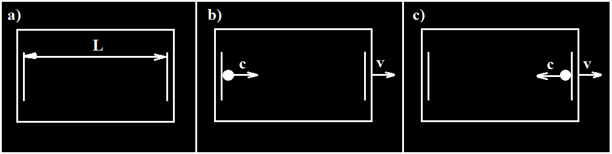
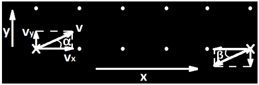

ВНИМАНИЕ! Если сломалось отображение формул, то перегрузите страницу. Поиск работает только в полноценной англоязычной браузерной версии (в мобильной не работает).
Последняя Pdf версия Теории всего: Теория всего.ru(2025.06.03).pdf
Познание окружающей Вселенной¶
Неравномерность гравитации. Квант гравитон. Блазар - СМЧД с релятивистскими струями¶
Предположим, если гравитация СМЧД с релятивистскими струями(Блазар) равномерна. По теории Альберта Эйнштейна гравитация лишь деформация пространства-времени, то есть её можно представить для двумерного случая в виде сильно натянутого батута с тяжелым мячом/пушечным ядром в центре. В этом случае конечно можно сразу сказать, что формирование релятивистких струй(джетов) не возможно, но ученые как обычно придумывают "костыли" чтобы не выкидывать общую теорию относительности(ОТО) на помойку.
Они делают ещё одно предположение о том, что вещество окружающее СМЧД не успевает поглощаться. Хотя это предположение уже противоречит ОТО, так как для деформирующей пространство-время СМЧД не имеет значения сколько вокруг вещества. СМЧД согласно ОТО поглотит всё вещество, так как оно просто провалится в СМЧД. Но давайте все же сделаем предположение, что СМЧД не успевает поглотить окружающее вещество. Тогда вещество всё прибывает, и СМЧД поглощает небольшую его часть. Вещества около СМЧД всё больше и оно наслаивается на СМЧД формирую внешнюю оболочку. Я бы в таком случае сказал, что оболочка должна иметь такую плотность и гравитацию в сумме с СМЧД, что свет бы не мог покинуть ее. Фактически это было бы новым слоем СМЧД. Однако ученые предполагают формирование аккреционного диска с сильным магнитным полем, которое благодаря процессу Бленфорда-Знаека или процессу Пенроуза извлекают энергию из СМЧД и используя её формируют релятивистские струи. Простите, что?! Согласно ОТО ничто не может покинуть СМЧД. Так нарушим ОТО и скажем, что это возможно. Но энергия неотделима от вещества. Фактически энегрия это характеристика вещества. Невозможно передать энергию без передачи частиц и, как я покажу далее, гравитация/гравитоны тоже не исключение.
Фактически ученые предполагают наличие аккреционного диска, который используя энергию СМЧД каким-то образом формирует релятивистскую струю. И это сейчас основное объяснение происходящего с блазаром.
Предполагается, что релятивистская струя состоит из плазмы и на нее действуют магнитные поля.
Откуда берутся частицы релятивистской струи? Единственные возможные кандидаты источников это СМЧД и аккреционный диск. Предположим, что частицы берутся не из СМЧД, а из аккреционного диска. Какие силы на них действуют? Гравитация СМЧД, а также гравитация и предполагаемое магнитное поле аккреционного диска. Ученые предполагают наличие очень сильного магнитного поля у аккреционного диска. В таком случае аккреционный диск фактически подобен по воздействию кольцу с током с хорошо известной структурой магнитного поля (рис. 1).
Рисунок 1 – Структура магнитного поля кольца с током
Соответственно, это означает что нет ни одной силы способной разогнать частицы аккреционного диска по оси вылета релятивистских струй. К тому же до скоростей близких к скорости света. Более того при сильных магнитных полях аккреционный диск должен оказывать расфокусирующее воздействие на плазму релятивистских струй, чего не наблюдается в реальности.
В результате воздействие СМЧД и аккреционного диска, согласно ОТО, не может привести к образованию релятивистских струй. Более того суммарная сила/воздействие затягивает частицы в СМЧД.
А теперь давайте разберемся как это действительно работает.
Крайне важны нам для этого данные LIGO. В 2016 году коллаборации LIGO объявили об обнаружении гравитационных волн. Фактически при наблюдении было зафиксировано значительное изменение гравитационного поля попавшего на разные детекторы в разное время. Исходя из этого и вычислили и обнаружили источник излучения. Сигнал исходил от слияния двух черных дыр на расстоянии около 1,3 миллиарда световых лет (~\(10^{25}\) метров). При этом значительная часть их массы (около 3 масс Солнца) ушла на излучение за ~0.2 секунды. Однако в нашей галактике (Млечный путь) примерно половина всех звёзд принадлежит к двойным звездам(двойным системам), которые к нам много ближе. Ближайшая Альфа Центавра на расстоянии около 4,36 светового года (~\(4 ⋅ 10^{16}\) метров). Более того эффект гравитационного воздействия уменьшается пропорционально квадрату расстояния. Всё это указывает на то, что ключевую роль в формировании гравитационных волн играет не близость двойной системы и не масса объектов, а величина изменяющегося излучения гравитонов.
Согласно ОТО гравитация это деформация пространства-времени без передачи энергии (не оказывает силовое воздейтствие), но и потеря энергии на гравитационное излучение в тесных двойных системах тоже, как утверждается, хорошо согласуется с моделью ОТО. На самом деле если взять любые реальные объекты Вселенной имеющие массу, то каждая пара из них тоже является двойной системой, а следовательно объекты теряют энергию на гравитационное излучение. Просто скорость процессов и величина гравитационного излучения не такая большая как в тесных двойных системах. Исходя из этого, например, даже атом водорода является двойной системой электрон-протон и генерирует гравитационное излучение. Это означает, что даже согласно ОТО все объекты Вселенной (обладающие массой) генерируют гравитационное излучение, тратят на это энергию и оказывают силовое воздействие на окружающие объекты.
А теперь главное. Предположим, что гравитация это не поле создаваемое массой (не деформация пространства-времени из ОТО), а элементарные частицы постоянно излучаемые объектами имеющими массу (гравитоны). В случае со сливающимися черными дырами (обнаруженными LIGO) произошло резкое изменение величины излучения гравитонов. Фактически значительная часть гравитонов, входящих в состав этих черных дыр, была излучена в очень короткий промежуток времени (~0.2 секунды).
Что мы имеем. Две черные дыры сливаясь излучили огромное количество гравитонов за короткий промежуток времени, что мы зафиксировали благодаря LIGO. Также мы поняли, что скорость распространения гравитонов равна скорости света.
Тогда как функционирует СМЧД с релятивистскими струями(Блазар)? Вся суть заключается в том, что гравитоны, как и фотоны могут излучаться неравномерно. СМЧД с релятивистскими струями(Блазар) излучает гравитоны неравномерно. Максимум излучения гравитонов в плоскости галактики, а минимум перпендикулярен ей. Получается, что излучение в минимуме настолько мало, что часть материи из СМЧД вылетает и формирует джеты (релятивистские струи) блазара. Почему же для некоторых СМЧД наблюдается столь неравномерное излучение гравитонов? По всей видимости, вся суть во вращении СМЧД вокруг собственной оси на релятивистских скоростях. Представьте себе детскую карусель вращающуюся на высокой скорости. Если на ней лежат вещи, камешки и даже пылинки, то они разлетятся в плоскости перпендикулярной оси вращения. Видимо так и происходит с СМЧД вращающейся со скоростью приближающейся к скорости света.
Темная материя¶
Существует ли темная материя? Блазары и LIGO указывают на то что излучение гравитации может быть неравномерно. Максимум излучения гравитонов в плоскости галактики, а минимум перпендикулярен ей. Получается, что излучение в минимуме настолько мало, что часть материи из СМЧД вылетает и формирует джеты (релятивистские струи) блазара. Почему же для некоторых СМЧД наблюдается столь неравномерное излучение гравитонов? Видимо вся суть во вращении СМЧД вокруг собственной оси на релятивистских скоростях.
В итоге плотность гравитационного излучения падает не пропорционально квадрату расстояния. Плотность падения гравитационного излучения находится в интервале от пропорции расстояния до пропорции квадрата расстояния. Точнее зависимость определяется перераспределением излучения от вращающейся сверхмассивной черной дыры в центре галактики. Если быть ещё более точным то плотность гравитационного потока определяется совокупностью неравномерных излучений от всех объектов галактики.
Получаем, что в добавлении теоретической темной материи может не быть нужды. Все объясняется неравномерным излучением гравитонов.
Все элементарные частицы = квант фотоны и квант гравитоны. Из чего состоят элементы Стандартной модели. Распад всего во Вселенной¶
Благодаря тому, что мы выделили квант гравитон(к.г.) как обособленную элементарную частицу, теперь возможно ответить на вопрос из чего состоит вся Вселенная. Ответ простой - из квант фотонов(к.ф.) и квант гравитонов(к.г.).
Все элементы Стандартной модели состоят из квант фотонов(к.ф.) и/или квант гравитонов(к.г.). Простейшим доказательством служат процессы аннигиляции, например, электрон-позитронной пары при этом образуются фотоны и гравитоны, которые сложно детектировать. Фактически электрон и позитрон состоит из сгуска квант фотонов и квант гравитонов, но при взаимодействии/аннигиляции/"превращении" теряют стабильность и разлетаются на составляюшие части. Каждый "образующийся" из 2/3 фотонов содержит в себе множество квант фотонов. Все "превращения" частиц Стандартной модели плюс квант гравитонов - есть ни что иное как изменение комбинаций групп квант фотонов(к.ф.) и квант гравитонов(к.г.).
Все, что имеет массу, содержит и излучает квант гравитоны. Все, что имеет заряд, содержит и излучает квант фотоны. Все, что имеет нейтральный заряд и ненулевую массу, содержит и излучает в среднем равное количество квант фотонов с противоположной спиральностью (они несут эффект противоположного заряда). В результате все состоит из квант фотонов и квант гравитонов.
Стоит особо отметить, что такие стабильные частицы как, например, протон на самом деле не являются абсолютно стабильными, так как обладают массой и, соответственно, излучают квант гравитоны и если не будет внешних источников для достаточного пополнения, то они будут распадаться. Также и с черными дырами.
Как известно фотоны отличаются своей cпиральностью(проекцией спина на свое движение). По всей видимости спиральность отвечает за положительность/отрицательность переносимого фотоном заряда/воздействия. То есть электрон и позитрон отличаются тем, что в их состав входят фотоны с разной спиральностью, а точнее квант фотоны с разной спиральностью. Это же верно и для всех других частиц и их античастиц.
Для сокращения будем писать \(к.ф.^+\) (квант фотон с положительной cпиральностью) и \(к.ф.^-\) (квант фотон с отрицательной cпиральностью).
В итоге всё состоит из квант фотонов(к.ф.) и квант гравитонов(к.г.). Все "превращения"/преобразования/распады частиц Стандартной модели и их производных есть ничто иное как перераспрееление квант фотонов и квант гравитонов. Антиматерия по сути это просто другая комбинация обычной материи (квант фотоны в них имеют инвертированую cпиральность, то есть там где были \(к.ф.^+\) расположены \(к.ф.^-\), а где были \(к.ф.^-\) расположены \(к.ф.^+\)). Протон фактически состоит из позитрона и нейтрального остатка. А нейтральный остаток содержит в себе равное количество квант фотонов с противоположной спиральностью (в среднем).
Исходя из того, что всё вещество/материя/антиматерия Вселенной в целом электронейтрально, то это означает, что оно в среднем состоит из равного количества \(к.ф.^+\) и \(к.ф.^-\), а также некоторого количества к.г. Из-за того что галактики постоянно излучают \(к.ф.^+\), \(к.ф.^-\) и к.г. за свои условные границы и это происходит по внешнему периметру материи/антиматерии Вселенной, то в итоге со временем всё вещество/антивещество разделится на элементарные составляющие - \(к.ф.^+\), \(к.ф.^-\) и к.г.. Если система со временем теряет часть составляющих во "внешнее" простанство, то запас этих составляющих будет падать, что приведет в итоге к невозможности поддерживать стабильное состояние и разделению системы на элементарные составляющие.
Позитроны и электроны¶
Позитроны излучают/содержат исключительно фотоны состоящие из \(к.ф.^+\). Электроны излучают/содержат исключительно фотоны состоящие из \(к.ф.^-\).
Ниже приведены обоснования этих заключений.
Предположим позитрон состоит исключиельно из \(к.ф.^+\) и к.г.. При "поглощении" \(фотона^-\) (группы \(к.ф.^-\)) позитрон, а точнее к.г. в нем инвертируют спиральность \(к.ф.^-\) на \(к.ф.^+\) с противоположным вектором скорости(вектор импулься также становиться противоположным), что объясняет далнейшую динамику позитрона. При "поглощении" \(фотона^+\) (группы \(к.ф.^+\)) к позитрону фактически просто присоединяются дополнительная группа \(к.ф.^+\) с тем же вектором скорости. Аналогично и для электрона. Предположим электрон состоит исключиельно из \(к.ф.^-\) и к.г.. При "поглощении" \(фотона^+\) (группы \(к.ф.^+\)) электрон, а точнее к.г. в нем инвертируют спиральность \(к.ф.^+\) на \(к.ф.^-\) с противоположным вектором скорости(вектор импулься также становиться противоположным), что объясняет далнейшую динамику электрона. При "поглощении" \(фотона^-\) (группы \(к.ф.^-\)) к электрону фактически просто присоединяются дополнительная группа \(к.ф.^-\) с тем же вектором скорости.
Фактически здесь вопрос о том "может ли квант фотон изменять спиральность при взаимодействии с квант гравитонами?".
Если нет. Тогда позитрон может излучать группу \(к.ф.^-\)( \(фотон^-\)), которая ранее была поглощена и входила в его составе. В этом случае в его состав могут входить как \(к.ф.^+\) так и \(к.ф.^-\) связанные вместе благодаря к.г.. Тогда если постоянно пускать в позитрон \(фотоны^-\) (группы \(к.ф.^-\)), то \(к.ф.^-\) станет больше чем \(к.ф.^+\) и позитрон "превратится" в электрон? При такой ситуации позитроны не будут взаимозаменяемы, так как в них будет разное количество \(к.ф.^+\) и \(к.ф.^-\) и, соответственно, их поведение будет различно. Получается состояние между позитроном и электроном будет размыто и зависить от соотношения \(к.ф.^+\) и \(к.ф.^-\). Рассмотрим для этого случая атом водорода. Электрон будет постоянно получать \(к.ф.^+\) от протона, а протон \(к.ф.^-\) от электрона. Тогда величина избыточного излучения \(к.ф.^-\) от электрона и \(к.ф.^+\) от протона будет уменьшаться во времени и вскоре обе частицы станут электронейтральными (как минимум одна частица станет электронейтральной) и атом разлетится на электронейтральные части. Вселенная в среднем электронейтральна, а следовательно все заряженные частицы будут обмениваться в среднем одинаковым потоком \(к.ф.^+\) и \(к.ф.^-\). При этом положительно заряженные частицы вначале будут излучать в основном \(к.ф.^+\), а отрицательно заряженные частицы вначале будут излучать в основном \(к.ф.^-\). Далее все заряженные частицы будут быстро терять индивидуальность заряда и станут электронейтральными. Всё это не соответствует наблюдаемой динамике электрона, позитрона и прочих заряженых частиц.
В итоге получаем, что квант фотон может изменять спиральность при взаимодействии с квант гравитонами. Позитроны излучают/содержат исключительно фотоны состоящие из \(к.ф.^+\). Электроны излучают/содержат исключительно фотоны состоящие из \(к.ф.^-\). При поглощении/присоединении к.ф. с противоположной спиральностью к позитрону/электрону - она инвертируется и также инвертируется вектор скорости (более сложные заряженные частицы фактически состоят из позитрона/электрона и нейтрального остатка. Например, протон состоит из позитрона и нейтрального остатка).
Свойства квант фотона и квант гравитона. Дифракция. Эффект наблюдателя. Динамика элементарных частиц предопределена. Судьба¶
Теперь необходимо разобраться со свойствами к.ф. и к.г.. Это корпускулы, а не волны.
Дифракция на щели или на полуплоскости и прочие эффекты легко объясняются тем, что фотоны/электроны или другие частицы сталкиваются с препятствием/щелью и переизлучаются частицами этого препятствия/щели. Это справедливо и для единичных фотонов/частиц из источника.
Эффект наблюдателя также легко объясним тем что "наблюдая" мы оказываем воздействие на щель/препятствие и тем самым нарушаем естественный процесс переизлучения фотонов/частиц от источника системой частиц щели/препятствия. В итоге человеческий глаз хотя и является "наблюдателем", но не влияет на процессы переизлучения частиц, так как не оказывает активного влияния, а лишь фиксирует попадающие в него фотоны. Напротив, если оказывать активное воздействие, то процесс переизлучения изменится. Влияем на систему - получаем другой результат динамики частиц. Никакого волшебства.
Итак к.ф. и к.г. - элементарные частицы, а наличие сознания/пассивного наблюдателя не влияет на системы даже на уровне элементарных частиц. Законы динамики элементарных частиц неизменны и четко определены. И это приводит нас к тому, что случайных событий не бывает. Просто иногда мы не знаем всех начальных условий и точные законы динамики элементарных частиц (\(к.ф.^+\), \(к.ф.^-\) и к.г.). В итоге динамика элементарных частиц Вселенной предопределена. Каждый раз думая об этом у меня появляется чувство дискомфорта, так как получается что у меня нет выбора и вся моя жизнь - судьба. Но таковы законы нашего Мира. С этим фактом ничего не поделаешь.
Стабильность частиц. Протон-протонный цикл. Распад нейтрона. Состав протона¶
Вернемся к мнимой стабильности частиц. Рассмотрим протон. Сейчас мы не можем создать идеальные условия изоляции при которых будет полностью перекрыт доступ подпитки \(к.ф.^+\), \(к.ф.^-\) и к.г.. Однако рассмотрим ядерные реакции в звездах. В частности протон-протонный цикл. $$ p + p → ^2H + e^+ + ν_e $$ На уровне кварков: \(u → d + e^+ + ν_e\). Итак два протона взаимодействуют и обмениваясь составляющими \(к.ф.^+\), \(к.ф.^-\) и к.г. преобразуются в ядро изотопа водорода дейтерия (дейтрон), позитрон и электронное нейтрино. Фактически один протон разделяется на нейтрон, позитрон и электронное нейтрино. Теперь ясно из чего состоит протон. В состав нейтрона входят к.г. и равное количество \(к.ф.^+\) и \(к.ф.^-\). Позитрон состоит из \(к.ф.^+\) и к.г.. Электронное нейтрино хорошо описано своим названием - маленький нейтрон/нейтрончик. В состав нейтрино также входят к.г. и равное количество \(к.ф.^+\) и \(к.ф.^-\). В итоге свободные протоны тоже будут распадаться по мере уменьшения подпитки \(к.ф.^+\), \(к.ф.^-\) и к.г..
Частицы и античастицы отличаются лишь cпиральностью к.ф.. Если, например, в частице преобладает \(к.ф.^+\), то в античастице инверсия, то есть \(к.ф.^-\)
Мы видели ранее как в ядерных реакциях звезд протон фактически распадается на позитрон, нейтрон и электронное нейтрино. А на что обычно распадается нейтрон. На протон, электрон и электронное антинейтрино. $$ p^+ → n + e^+ + ν_e \text{ (На уровне кварков: } u → d + e^+ + ν_e \text{ ) } $$ $$ n → p^+ + e^- + \overline ν_e \text{ (На уровне кварков: } d → u + e^- + \overline ν_e \text{ ) } $$ Красота в том когда эти два распада написать рядом. Как видим частицы и античастицы входят в состав того, что считается обычными частицами материи. Электронейтральность Вселенной говорит о том, что количество \(к.ф.^+\) и \(к.ф.^-\) равно. Интересно то, что в обоих распадах получаемые в итоге нейтрон и протон содержат в себе меньшее количество \(к.ф.^+\), \(к.ф.^-\) и к.г., чем исходные протон и нейтрон. Недостающая часть уходит на позитрон и электрон, электронные нейтрино и антинейтрино соответственно. Интересно будет ли в итоге цепочка распадов: нейтрон → протон → нейтрон → протон → и так далее с остатками в виде электронов, позитронов, нейтрино, антинейтрино длиться пока есть запас \(к.ф.^+\), \(к.ф.^-\) и к.г.? Возможно, но главное здесь не это. Сложив эти два распада: $$ p^+ + n → n + p^+ + e^+ + e^- + ν_e + \overline ν_e → n + p^+ + \gamma + \text{ к.г. } $$ (квант гравитоны мы ещё не научились нормально детектировать) из протона и нейтрона получаем нейтрон и протон, а также в процессе аннигиляции пар позитрон-электрон, электронных нейтрино-антинейтрино получаем \(к.ф.^+\), \(к.ф.^-\) и к.г.
Рассмотрим аннигиляцию протона и антипротона \(p+ \overline p\) (мне больше нравится запись: \(p^++p^-\)): \(p^++p^- → 2π^+ + 2π^- + 3π^0 →\)\(2(μ^+ + ν_μ) + 2(μ^- + \overline ν_μ) + \gamma →\)\(2(e^+ + \overline ν_μ + ν_e + ν_μ) + 2(e^- + ν_μ + \overline ν_e + \overline ν_μ) + \gamma →\)\(2(e^+ + e^-) + 4(ν_μ + \overline ν_μ) + 2(ν_e + \overline ν_e) + \gamma →\)\(\gamma\)
Получаем в результате множество фотонов (в действительности получится множетство \(к.ф.^+\), \(к.ф.^-\) и к.г.).
Как видно протон не является элементарной частицей (состоит из \(к.ф.^+\), \(к.ф.^-\) и к.г.) и нестабилен (дополнительные разъяснения в разделе «Стабильность систем элементарных частиц»). В итоге снова приходим к тому, что всё состоит из \(к.ф.^+\), \(к.ф.^-\) и к.г..
Особенность структуры нейтрино. Структура фотона¶
Очень специфическими частицами Стандартной модели являются нейтрино из-за слабого взаимодействия с веществом. Нейтрино в этом плане похожи на гравитоны. Однако возможные преобразования электрон-позитронной пары как в фотоны, так и в нейтрино-антинейтрино: $$ e^+ e^- → 2 \gamma $$ $$ e^+ e^- → ν \overline ν $$ указывает на то, что они также состоят из \(к.ф.^+\), \(к.ф.^-\) и к.г.. Также на это указывают многие прочие цепочки преобразований, например, аннигиляция электрон-позитронной пары при высоких энергиях. В этом случае вначале образуются промежуточные пи-мезоны, а затем из них образуются, в том числе, нейтрино: $$ e^+ e^- → π^+ π^- → μ^+ + μ^- + ν_μ + \overline ν_μ $$ Уникальность нейтрино заключается в их структуре, по сравнению с прочими частицами Стандартной модели. \(К.ф.^+\), \(к.ф.^-\) и к.г. в нейтрино очень компактно/плотно упакованы, что приводит к гораздо более редким столкновениям с веществом/антивеществом и, соответственно, колосальной длине свободного пробега.
Как мы знаем из электрон-позитронной пары может получиться пара нейтрино-антинейтрино: $$ e^+ e^- → ν \overline ν $$ А значит именно структура упаковки частицы так сильно влияет на взаимодействие/столкновения с другими частицами.
Структура фотона также крайне интересна. Фотон состоит из группы к.ф., которая похоже формирует форму диска или круга. Именно из-за этого свет можно поляризовать, то есть не пропускать определенные пространственные ориентации дисков.
НСО¶
Неподвижные системы отсчета (НСО) – это системы отсчёта, в которых неподвижные объекты покоятся, а свободные фотоны, не взаимодействующие с окружающими частицами, движутся с одинаковой скоростью света. НСО равноправны и могут быть описаны общими законами.
Cкорость произвольных часов относительно НСО равна, по всей видимости, скорости относительно реликтового излучения(исходя из дипольной анизотропии).
Эффект запаздывания движущихся часов по сравнению с покоящимися в НСО¶
Теперь рассмотрим эксперимент, в котором происходит запаздывание движущихся часов по сравнению с покоящимися – эксперимент Хафеле-Китинга. Для простоты будем рассматривать световые часы. Согласно Теории относительности используется эффект «замедления времени», для того чтобы описать эффект запаздывания часов. Однако при использовании НСО это не требуется, так как в действительности эффекта «замедления времени» нет.

a) часы покоятся; b) часы движутся со скоростью v, фотон движется по направлению движения часов; c) часы движутся со скоростью v, фотон движется по противоположному направлению движения часов. Рисунок 2 – Эффект запаздывания движущихся часов по сравнению с покоящимися в НСО
Часы покоятся (рисунок 2а). Для того чтобы фотон «прошел» путь от первой пластины до второй и обратно, необходимо время \(T=\frac{2L}{c}\) – это период часов. По количеству периодов определяют сколько времени прошло, так как считают период неизменным
Часы движутся со скоростью v (рисунок 2b, 2c). Тогда при движении фотона по направлению движения часов ему необходимо будет пройти расстояние больше L, так как часы по сравнению с НСО движутся со скоростью v. Расстояние будет равно \(cT_1=vT_1+L\), откуда \(T_1=\frac{L}{c-v}\). При движении фотона по противоположному направлению движения часов ему необходимо будет пройти расстояние меньше L. Расстояние будет равно \(cT_2=L-vT_2\), откуда \(T_2=\frac{L}{c+v}\).
Получаем, что время полного периода \(T=T_1+T_2=\frac{L}{c-v}+\frac{L}{c+v}\) Тогда при нулевой скорости часов: \(T=\frac{2L}{c}\), при скорости часов 0.5c: \(T=\frac{2L}{c}+\frac{2L}{3c}=\frac{8L}{3c}\), а при скорости часов, стремящейся к скорости света: T→∞.
В итоге движущиеся часы отсчитывают меньше тактов «периодического» процесса, так как время, затрачиваемое на каждый такт, больше. Это приводит к тому, что движущиеся часы запаздывают по сравнению с покоящимися или движущимися с меньшей скоростью.
Время – характеристика Мира, отражающая изменение местоположения элементарных частиц в пространстве.
Время для всех объектов одинаково и течет непрерывно, линейно, а главное, ни от чего не зависит. Наиболее близкими к действительности являются понимания времени как «стрелы времени» и «оси времени», однако перемещаться по этой оси нет возможности, так как для этого необходимо иметь возможность управлять элементарными частицами и Мировыми законами, то есть Миром.
"Замедление времени", прочие эффекты Теории относительности Эйнштейна и сама теория берут начало из физически ошибочного определения термина "Время". Почему физически ошибочно давать соответствующее определение описано в разделе "Как дать определение термину «Время», чтобы создать теорию относительности".
Как дать определение термину «Время», чтобы создать теорию относительности¶
Дата изначальной публикации: 02.08.2015
С 1967 года международная система единиц СИ определяет секунду как 9 192 631 770 периодов электромагнитного излучения, возникающего при переходе между двумя сверхтонкими уровнями основного состояния атома цезия-133.
Однако на каком основании считается, что период электромагнитного излучения ни от чего не зависит?
Примером рациональных мыслей в данном направлении является тот факт, что к выше описанному определению секунды с 1997 года были добавлены уточнения: в покое, при температуре в 0 К и отсутствии внешних полей. Однако эти уточнения не применяются на практике, так как атомные часы не находятся при температуре в 0 К и не находятся в покое, так как поверхность Земли даже близко не является ИСО.
Рассмотрим факт:
Часы №1, движущиеся с большей скоростью относительно неподвижной системы отсчета (НСО) или ИСО, отсчитывают меньше периодов, чем часы №2, движущиеся с меньшей скоростью.
Вывод (согласно ТО):
- Чем выше скорость часов/объекта (относительно ИСО), тем сильнее замедление времени (деформация времени);
- Время, затрачиваемое на период электромагнитного излучения (время полного периода), не меняется.
Вывод (согласно моей концепции):
- Чем выше скорость часов/объекта (относительно НСО), тем длительнее период электромагнитного излучения (время каждого периода увеличивается). Течение времени неизменно (постоянно);
- Время, затрачиваемое на период электромагнитного излучения (время полного периода), меняется.
Обе трактовки основаны на одном и том же факте, но полностью противоположны.
Описанная с точки зрения ТО трактовка является основополагающей, ключевой базой ТО, без которой невозможно ее существование.
Описанная с моей точки зрения трактовка свидетельствует об абсолютной природе времени и Мира в целом.
Концепция времени¶
Единица времени. За время равное 1ой секунде ни с чем не взаимодействующий квант света проходит расстояние в 299 792 458 м.
Периодичность процессов в произвольных часах (объектах), в том числе атомных или световых зависит от скорости движения часов относительно НСО. Чем выше скорость часов, тем больше времени тратиться на период электромагнитного излучения (например, атома цезия-133) или полный период световых часов.
В предельном случае при скорости движения часов, стремящейся к скорости света, период электромагнитного излучения стремится к бесконечности (см. Эффект запаздывания движущихся часов по сравнению с покоящимися в НСО).
В результате при увеличении скорости объекта замедляется не время, а увеличивается время периода процессов в объекте (например, период электромагнитного излучения).
Время для всех элементарных частиц и их систем (всех объектов Мира) течет одинаково.
Одна из главенствующих проблем ТО именно в том, что принимается на веру, что период электромагнитного излучения (такт) часов постоянен (не изменен) и ни от чего не зависит.
Период электромагнитного излучения в атомных часах – среднее время между двумя излучения атома (например, цезия-133).
Период световых часов – время, за которое квант света пролетает от первой пластины до второй и обратно.
Особо стоит отметить, что эксперимент Майкельсона-Морли не показателен, так как нельзя гарантировать, что процесс переизлучения света зеркалами занимает одно и то же время. Однако он преподносится как неопровержимое доказательство корректности ТО, которым не является.
Фактически само определение секунды (принятое с 1967 года и уточненное в 1997 году) зависит от скорости движения часов относительно НСО, так как изменяется время, затрачиваемое на каждый период электромагнитного излучения.
В результате согласно общепринятому на данный момент определению «Времени» длительность секунды различна для объектов, движущихся с разной скоростью.
Собственно, использовав термин «Время», зависящий от скорости движения часов/объекта и получилась ТО.
Введя зависимость от скорости в определении времени, получили зависимость в виде релятивистского «замедления времени». Вся суть ТО порождена термином «Время».
Какие возможны варианты для проверки устойчивости периода электромагнитного излучения атома и, соответственно, термина «Время»?
Согласно ТО движущиеся часы в любой ИСО должны идти медленнее покоящихся. Это можно проверить и получить, что в определенных случаях часы будут идти быстрее, а именно, когда они будут двигаться медленнее в НСО.
Согласно общепринятому определению секунды (9 192 631 770 периодов излучения атома цезия-133) свет преодолеет 299 792 458 м, но для часов, двигающихся с разными скоростями (относительно НСО), расстояние, пройденное светом за секунду в НСО (абсолютный отрезок времени), будет различным. Это укажет на различную длительность периода в часах.
Получаем ключевой вопрос: как определить абсолютное время / абсолютный отрезок времени / время в НСО?
- Замерить время, за которое свет преодолеет расстояние в 299 792 458 м в НСО. Весьма непростая задача.
-
Исходя из описания эффекта запаздывания движущихся часов по сравнению с покоящимися в НСО, период часов, например световых, где v – скорость часов относительно НСО, можно определить по формуле: \(\large{T = \frac{L}{c-v}+\frac{L}{c+v}}(1)\)
Период часов в НСО: \(\large{T_{НСО} = \frac{2L}{c} (2) => L = \frac{cT_{НСО}}{2}}(3)\)
Подставим (3) в (1): \(\large{T = \frac{cT_{НСО}}{2(c-v)}+\frac{cT_{НСО}}{2(c+v)} = \frac{cT_{НСО}(c+v)}{2(c-v)(c+v)}+\frac{cT_{НСО}(c-v)}{2(c-v)(c+v)} =}\) \(\large{\frac{c^2T_{НСО}}{(c-v)(c+v)} (4)}\) \(\large{=>}\) \(\large{T_{НСО} = \frac{T(c-v)(c+v)}{c^2}}(5)\)
Теперь важно ответить на следующий вопрос. Что показывают любые часы? Время? Нет. Количество периодов, умноженное на константу.
Период произвольных часов (T) зависит от всех внешних воздействий, температуры и главное от скорости движения часов относительно НСО.
При этом количество периодов для произвольных часов: \(\large{M = \frac{t}{T} = t \frac{(c-v)(c+v)}{c^2T_{НСО}}}(6)\),
откуда: \(\large{T_{НСО} = t \frac{(c-v)(c+v)}{c^2M}}(7)\)
При этом количество периодов в НСО: \(\large{N = \frac{t}{T_{НСО}}}(8)\).
Подставим (7) в (8) и получим постоянное количество периодов в НСО, которое не зависит от скорости произвольных часов: \(\LARGE{N = \frac{t}{T_{НСО}} = \frac{t}{t\frac{(c-v)(c+v)}{c^2M}} = \frac{c^2M}{(c-v)(c+v)}}(9)\).
Фактически таким образом можно рассчитывать абсолютное время для произвольных часов. Однако стоит напомнить, что нужно учитывать зависимость хода часов от всех внешних воздействий и температуры, а также здесь мы рассматривали идеализированные световые часы, а не реальные атомные.
Стоит напомнить, что здесь v – скорость произвольных часов относительно НСО.
По всей видимости v – скорость относительно нулевого сдвига реликтового излучения(нулевой дипольной анизотропии).
Итак, что если период электромагнитного излучения не константа и зависит от скорости движения часов относительно НСО?
- Время (исходя из термина моей концепции) является абсолютной величиной, как и пространство и весь Мир в целом (включая элементарные частицы, их характеристики и системы, которые они составляют), а также все вытекающие отсюда следствия.
- Не требуется производить преобразования при переходе между ИСО. ИСО вообще становятся не нужны. Каждый объект движется относительно единственной НСО.
- Нет никаких «замедлений времени», «сокращений длинны», «относительности одновременности» и ТО в целом.
Итог¶
Или мы считаем, что период часов не зависит от скорости их движения относительно НСО и одинаков во всех ИСО, а знчит даем определение термина «время», базирующееся на фиксированном количестве периодов электромагнитного излучения атома цезия-133, и получаем ТО.
Или соглашаемся с тем, что часы, движущиеся с разной скоростью относительно НСО, показывают разное время из-за того, что период процессов в них различен, и получаем абсолютный Мир.
Я считаю, что факты свидетельствуют о зависимости периода всех внутренних процессов (в частности периода электромагнитного излучения атома цезия-133) от скорости движения объекта/системы элементарных частиц относительно НСО. Фактически чем ближе скорость объекта/системы элементарных частиц к скорости света, тем меньше относительная скорость между её элементарными частицами и, соответственно, больше времени тратится на все процессы. В предельном случае, при стремлении скорости относительно НСО к скорости света, любые элементарные частицы объекта/системы никогда не будут взаимодействовать (например, квант гравитон движущийся от одного квант фотона к другому никогда не долетит, так как проекция скорости на нужное направление будет стремится к нулю - зависимость периода процессов в объекте от скорости движения объекта относительно НСО).
Зависимость периода процессов в объекте от скорости движения объекта относительно НСО¶
Скорость объекта сильно влияет на его динамику, так как период всех процессов стремится к бесконечности при приближении скорости (относительно НСО) к скорости света. Период процессов увеличивается из-за того что векторы движения, у \(к.ф.^+\), \(к.ф.^-\) и к.г. в составе объекта, стремятся быть сонаправлены. И для того чтобы, например, к.г. долетел от одного \(к.ф._1\) к другому \(к.ф._2\) требуется очень много времени, так как проекция скорости к.г. на нужное направление крайне мала (стремится к нулю при стремлении скорости объекта (относительно НСО) к скорости света):
Рисунок 3 – Взаимодействие двух квант фотонов с квант гравитоном при приближении скорости объекта (относительно НСО) к скорости света
При нулевой скорости объекта (относительно НСО) период процессов минимальный. Отсюда мы и получаем что чем выше скорость объекта (относительно НСО), тем выше его время жизни (относительно НСО). Это собственно и подтверждается экспериментально. Чем ближе скорость нестабильной частицы/объекта к скорости света (относительно НСО), тем большее расстояние она/он проходит прежде чем распасться.
Интерференция это основа для специальной теории относительности и квантовой механики. Некорректная интерпретация интерференции и последствия этого¶
Интерференция это основа для специальной теории относительности и квантовой механики. Некорректная интерпретация интерференции и последствия этого описано в отдельной статье.
Общая теория относительности vs гравитационные маневры и черные дыры¶
Дата изначальной публикации: 22.11.2015
Гравитационный маневр (ГМ) – разгон, замедление, изменение направления полёта объекта под действием гравитационных полей других объектов, как правило, массивных (небесных тел).
При гравитационном маневре меняются вектор и величина импульса и энергия объекта, то есть эти параметры до ГМ и после ГМ – различны.
Это справедливо для любых систем отсчета (СО), в том числе для инерциальных систем отсчета (ИСО), исходя из данных о динамике объектов во Вселенной и результатов численного моделирования. За исключением случая, когда СО связана с массивным объектом (МО1), за счет которого осуществляется гравитационный маневр. Однако даже в этом привилегированном случае при наличии хотя бы одного другого массивного объекта (МО2), имеющего ненулевую скорость (относительно МО1), что соответствует всем реальным случаям, у объекта использующего гравитационный маневр как и в прочих случаях изменятся параметры импульса и энергии. Изменения этих параметров происходит из-за того, что какой бы из массивных объектов не был выбран за СО, то другой/другие массивные объекты внесут вклад в изменение параметров объекта использующего ГМ. В результате мы выяснили, что для всех реальных случаев гравитационный маневр приводит к изменению вектора и величины импульса и энергии объекта.
Согласно общей теории относительности (ОТО) гравитация не сила, а деформация пространства-времени, в которой отсутствуют силы, частицы-переносчики взаимодействия и соответственно обмен/передача энергии. Однако, как было показано ранее, энергия объекта меняется за счет гравитации (при отсутствии прочих сил) в случае ГМ. Это означает, что гравитация оказывает силовое воздействие, вследствие чего меняется энергия объекта. Также это означает, что представление гравитации в виде деформации пространства-времени согласно ОТО ошибочно, так как в действительности энергия объекта при гравитационном маневре изменяется.
Некоторые важные следствия:
- гравитацию переносят частицы – гравитоны. Исходя из имеющих данных, скорость гравитонов равна скорости света;
- черные дыры оказывают гравитационное воздействие, а соответственно излучают гравитоны и теряют энергию. И в итоге будут рассыпаться, так как будут неспособны удерживать входящие в их состав частицы;
- вся Вселенная в итоге рассыплется на элементарные частицы.
Принцип эквивалентности гравитации и инерции (Лифт Эйнштейна)¶
Дата изначальной публикации: 24.02.2015
Описание принципа эквивалентности гравитации и инерции можно посмотреть, например, в Википедии.
Данный принцип неверен, так как не соответствует действительности. Далее рассмотрим обоснование.
Гравитация оказывает одинаковое воздействие на все части объекта. Например, если человек помещен в гравитационное поле Земли, то через его тело непрерывно проходит поток гравитонов, действующий на каждую часть тела равномерно. То есть к каждому атому приложена сила, равная произведению массы атома на ускорение свободного падения Земли (\(g \sim 9,8 \text{м/с}^2\)). В результате все части тела в гравитационном поле двигаются синхронно, и тело не испытывает никаких деформационных нагрузок.
Сила инерции, действующая на объект внутри лифта, равна по модулю и противоположна по направлению силе реакции опоры при ускорении лифта Эйнштейна. Ускорение лифта оказывает различное динамическое воздействие на различные части объекта. Например, если человека поместить в лифт, движущийся со значительным ускорением (можно ощутить эффект в любом лифте, набирающем скорость) или, например, при выполнении пилотом самолета фигур высшего пилотажа, то на отдельные части тела оказывается различное воздействие. Рассмотрим пример с лифтом, ускоряющимся от поверхности Земли. Лифт начинает ускоряться и смещается относительно человека в лифте, что приводит к увеличению силы реакции опоры на подошвы ботинок человека. Остальные части тела еще не подвержены влиянию ускорения лифта. В связи с увеличением силы реакции опоры на подошвы ботинок происходит их деформационное сжатие, что в свою очередь приводит к увеличению давления между атомами подошвы ботинок и приводит к их ускорению относительно остальных частей тела. Затем деформация по цепочке передается от подошв ботинок к лодыжкам человека, затем к голеням, затем к бедрам, затем к тазу, затем к позвоночнику, затем к внутренним органам и голове. Особо отмечу, что так как внутренние органы не плотно закреплены внутри тела, то они смещаются и деформируются при ускорении в лифте или самолете (в отличии от воздействия на них гравитации). Причем именно из-за этого человек не способен выдерживать длительное ускорение (перегрузку) более 10g. В результате разные части тела двигаются асинхронно и тело испытывает динамические деформационные нагрузки.
По сути, по деформации можно определить какая из сил действует на объект: гравитационная сила или сила инерции. При воздействии гравитационной силы деформаций наблюдаться не будет, а при воздействии силы инерции будет наблюдаться динамическая деформация в зависимости от величины ускорения вплоть до разрушения целостности объекта. При этом любая величина однородного гравитационного поля не будет деформировать объект.
Хорошим примером отсутствия деформаций является международная космическая станция (МКС). Хотя гравитационная сила практически такая же как и на Земле (ускорение свободного падения ~ 8,8 \(м/с^2\)), но деформаций объекты МКС не испытывают.
В чём различие силы гравитации и силы реакции опоры (равна по модулю и противоположна по направлению силе инерции при ускорении лифта Эйнштейна) на атомном уровне?
Сила гравитации это, по сути, воздействие гравитонов на все атомы объекта. Если гравитационное поле однородно, то ускорение, придаваемое каждому атому – одинаковое.
Сила реакции опоры это, по сути, воздействие атомов опоры исключительно на те атомы объекта, которые соприкасаются с атомами опоры.
В итоге принцип эквивалентности сил гравитации и инерции – неверен.
Дополнение (2015.12.19):¶
Давайте возьмем формулировку принципа эквивалентности сил гравитации и инерции непосредственно самого Эйнштейна:
"A little reflection will show that the law of the equality of the inertial and gravitational mass is equivalent to the assertion that the acceleration imparted to a body by a gravitational field is independent of the nature of the body. For Newton's equation of motion in a gravitational field, written out in full, it is:
(Inertial mass) * (Acceleration) = (Intensity of the gravitational field) * (Gravitational mass).
It is only when there is numerical equality between the inertial and gravitational mass that the acceleration is independent of the nature of the body."
Какие здесь ограничения на эксперимент? Здесь говориться, что сила гравитации и сила инерции оказывают одинаковое воздействие на объект (при равенстве гравитационной и инертной массы) и отличить это воздействие невозможно.
Приведем эксперимент, в котором явно определяется какая из сил действует:
Первый случай. Корабль/«лифт Эйнштейна», на который действует только сила гравитации (например, под воздействием массивного объекта). Ускорение – есть, реакции опоры корабля на человека в нем – нет, деформационной нагрузки между атомами корабля/человека за счет ускорения – нет.
Второй случай. Корабль/«лифт Эйнштейна» (находится на таком удалении от массивного объекта, что сила гравитации стремится к нулю), на который действует только сила инерции (например, под воздействием двигателя корабля). Ускорение – есть, реакция опоры корабля на человека в нем – есть, деформационная нагрузка между атомами корабля/человека за счет ускорения – есть.
Особо отметим, что выше описанный эксперимент корректно проводить согласно формулировке принципа эквивалентности (сил гравитации и инерции) Эйнштейна.
Фактически данный эксперимент противоречит принципу эквивалентности Эйнштейна, соответственно, согласно данному эксперименту принцип эквивалентности сил гравитации и инерции Эйнштейна – неверен.
Активная и пассивная массы.¶
Теперь исходя из того что всё в Мире состоит из \(к.ф.^+\), \(к.ф.^-\) и к.г. необходимо обсудить понятия массы.
Масса бывает активная и пассивная. Активная масса - сколько к.г. излучает объект/система элементарных частиц в единицу времени. Пассивная масса - сколько к.г. взаимодействует с объектом/системой элементарных частиц в единицу времени при облучении единичным/одинаковым потоком к.г.
Активная и пассивная массы сильно зависят от структуры объекта, скорости движения относительно НСО (неподвижной системы отсчета). Посмотрим как влияет структура объекта. Возьмем электрон плюс позитрон и сравним с нейтрино плюс антинейтрино при преобразовании: $$e^+ e^- → ν \overline ν $$ Суммарное количество \(к.ф.^+\), \(к.ф.^-\) должно быть идентично. Количество к.г. мы, к сожалению, пока не можем определить. Однако для электрона и нейтрино активная и пассивная массы будут различаться из-за структурных различий. Нейтрино обладает меньшей активной массой и, скорее всего, меньшей пассивной тоже из-за более высокой плотности структуры.
Исходя из зависимости периода процессов в объекте от скорости движения объекта относительно НСО можно сделать ещё одно заключение.
Чем выше скорость объекта, тем меньше активная масса (излучение к.г.) и излучение фотонов тоже. Естественно это будет сильно заметно только на релятивистских скоростях (относительно НСО).
Пространство¶
Знания, которыми на данный момент обладает человечество, позволяют уверенно утверждать, что пространство нашего Мира трехмерное и непрерывное (отсутствие дискретности). Обоснование непрерывности пространства и времени описано в разделе «Непрерывность пространства и времени» .
Для доказательства трехмерности рассмотрим простой мысленный эксперимент. Представим двухмерный Мир бесконечной плоскостью, а для еще большей наглядности – листом бумаги. Трехмерный Мир можно представить бесконечным набором бесконечных плоскостей, лежащих параллельно друг на друге, а для упрощенного представления – бесконечной или даже конечной стопкой бумаги. Если Мир является трехмерным, то объекты трехмерного Мира со временем могут появляться и исчезать в двухмерном из ниоткуда и менять свою конфигурацию. Наглядный пример можно получить путем выливания пузырька чернил на стопку бумаги. В начальный момент частиц чернил в двухмерном Мире (на листе) не было, но со временем из ниоткуда появляются частицы чернил и пятно начинает расширяться и проникать в другие двухмерные Миры (на листы внутри стопки). Этот пример показывает, что если есть объект более высокого уровня мерности (n+1-уровень) и он взаимодействует с нижним Миром (n-уровня), то объекты n+1-уровня с точки зрения n-уровня гарантированно можно наблюдать (они присутствуют в данном Мире), и они фантастическим образом появляются из ниоткуда, меняются необъяснимым образом и исчезают в никуда. По причине того, что такого в нашем Мире не наблюдается, можно сделать заключение исходя из имеющихся знаний, что наш Мир трехмерный. Конечно, можно говорить сколько угодно, что наш Мир имеет мерность больше трех, но исходя из выше доказанного следует, что наш Мир не взаимодействует с другими трехмерными частями предполагаемого четырехмерного пространства, то есть, возвращаясь к примеру со стопкой бумаги, ее листы не взаимодействуют, а следовательно, нет никакого смысла усложнять представление, добавляя не имеющие к нам (к нашему Миру) отношение мерности пространства.
Судьба и вероятность¶
Понятие вероятность события неверно, и его некорректно использовать, так как наш Мир подчиняется законам и, как следствие, при выполнении Мировых законов последствия однозначны, а, следовательно, всё в Мире предрешено и у каждого объекта и Мира целиком один путь – судьба (есть закон => есть однозначность => есть судьба). По сути, Мировые законы – правила нашего Мира, и если бы их не было, то в Мире царил бы хаос (тотальный беспорядок). К примеру, положение частиц и объектов было бы произвольным с течением времени, время изменялось бы произвольным образом, одни и те же частицы или объекты взаимодействовали абсолютно по-разному, предсказать что-либо было бы невозможно и т.д. и т.п. Последствия выполнения закона однозначны, так как по определению закон это правило, а если оно исполняется, то итог его выполнения однозначен.
Истина Мира может быть постигнута исключительно экспериментально (наблюдение – частный случай эксперимента, а все остальные подходы это уже анализ фактов). Любые типы экспериментов показывают, что чем точнее задаются условия проведения серии экспериментов, тем меньше отклонения результатов, а, следовательно, при полном совпадении условий (что реализовать почти невозможно) отклонений не будет, что, в свою очередь, свидетельствует об обязательном исполнении Мировых законов.
Вероятность создана для частичного описания поведения объектов и систем. Даже на квантовом уровне случайность «возникает» (искусственно вводится), когда мы что-то не учитываем и пытаемся хотя бы частично описать исследуемое явление.
Изменить судьбу невозможно, так как невозможно поменять Мировые законы.
Мировые законы поменять невозможно, находясь внутри системы, а если изменение законов заложено в системе, то это также закон.
Посмотрим на всё это с другой точки зрения и попробуем доказать наличие в Мире случайности. Предположим, в Мире действует «закон» случайности, по которому происходят случайные события. Разберемся, что это означает. Исходя из данного «закона», поведение, динамика, характеристики, свойства элементарных частиц, взаимодействие между элементарными частицами, особенности пространства и времени обладают элементом случайности, то есть меняются произвольным образом. Это означает, что в одной и той же ситуации (полное совпадение условий эксперимента) любой объект (в том числе и элементарная частица) ведет себя по-разному. Это уже можно проверить экспериментально. Для макрообъектов этого не наблюдается (исходя из экспериментов и общедоступных наблюдений). Для микрообъектов (в том числе и элементарных частиц) ситуация такова, что воссоздать абсолютно одинаковые условия на текущий момент невозможно. Однако при проведении любых экспериментов получается следующая тенденция. Чем меньше отклонение условий, тем меньше отклонение результатов (характеристик, свойств, динамики и т.д. элементарных частиц или составных микрообъектов и остальных характеристик Мира). Соответственно, это может означать только одно – при соблюдении всех условий эксперименты дадут одинаковые результаты, а значит, «закона» случайности нет и последствия однозначны, что приводит к всеобщей однозначности – судьбе. Можно привести множество примеров из микромира, которые свидетельствуют об уменьшении отклонений результатов при уменьшении отклонений условий:
- законы сохранения;
- поглощение / излучение фотонов веществом (только фотоны определенного интервала энергии поглощаются / излучаются);
- одинаковые орбиты электронов в атомах;
- одинаковые преобразования высокоэнергетических частиц при их столкновении;
- одинаковые химические реакции;
- одинаковая глубина проникновения частиц в вещество и т.д.
На самом деле любой эксперимент является примером, но на одних будет более наглядно видна тенденция, а на других менее наглядно. Причина этого проста – насколько точно соблюдаются условия. В реальности бывает даже так, что соблюдаются только самые незначительные условия, что приводит к почти полному отсутствию тенденции.
Стоит особо отметить, что сумма случайностей не дает в сумме закономерность (закон). Для примера представим себе группу частиц, из которых состоит объект. Будем считать, что частицы движутся с постоянной скоростью v. Векторы скоростей будут направлены абсолютно случайным образом, а значит, возможен случай, когда сумма векторов скорости скомпенсирована и равна 0, а также случай, когда векторы скорости имеют одно направление и, соответственно, сумма векторов скорости равна v. Также возможны и промежуточные значения от 0 до v. К тому же направление вектора скорости также возможно любое. В итоге скорость тела и ее вектор абсолютно случайны (не сокращается область случайности, а занимает весь допустимый в рамках условий спектр). Что, в свою очередь, подтверждает высказывание о том, что сумма случайностей является случайной и не может быть описана законом, что не наблюдается в Мире, а значит, в Мире нет случайностей.
Все случайные величины не являются случайными, так как имеют закон их получения / закон распределения случайной величины (например, линейный, экспоненциальный, нормальный и т.д.).
Неопределенность Гейзенберга¶
Неопределенность Гейзенберга свидетельствует о том, что на текущем этапе развития науки и техники нет возможности одновременно определить координату и импульс квантового объекта, а не о том, что объект будет находиться в нескольких состояниях или его состояние не подчиняется законам и нельзя заранее сказать, каким оно будет.
Неопределенности / неоднозначности – нет.
Нельзя точно измерить параметры объекта, не повлияв на него.
Частицы¶
Согласно логике фотон является составной частицей, так как доказано, что энергия фотона квантуется. Поэтому логично предположить, что он является составной частицей и накапливает энергию с накоплением частиц, входящих в его состав (фотон состоит из группы квант фотонов). Фотон изменяет свою траекторию под действием гравитации, а следовательно, обладает пассивной массой.
Черные дыры излучают гравитацию (гравитоны), а соответственно, теряют частицы (гравитоны) и их энергию, что означает, что они теряют активную массу («испаряются»). Причина излучения – взаимодействие элементарной частицы или системы элементарных частиц между собой и окружающими объектами, которые либо недостаточно хорошо удерживают элементарную частицу или систему элементарных частиц, либо передают достаточно большой импульс (меняют стабильную траекторию движения элементарной частицы или системы элементарных частиц на нестабильную). Экранировка гравитации при представлении гравитации в виде частиц является возможной и логичной (имеет неподтвержденные экспериментальные доказательства при эксперименте с вращающимися сверхпроводящими пластинами – эффект Подклетнова).
Энергия объекта определяется количеством элементарных частиц, входящих в его состав, и направлением их векторов скорости.
Скорость элементарных частиц постоянна, условие необходимо для того, чтобы соблюдались правила Мира (например, квантование энергии). Подробнее смотрите в разделе «Постоянство скорости элементарных частиц».
При рассмотрении всех известных видов взаимодействия (гравитационного, электромагнитного, сильного и слабого) необходимо отметить следующее. Все «превращения» «элементарных» частиц Стандартной модели друг в друга являются ничем иным, как взаимодействием и обменом элементарными частицами - квант фотонами и квант гравитонами.
Материя¶
Материя не является порождением сознания, так как в случае обратного можно было бы менять материю и ее свойства силой разума. По сути, сознание является порождением материи.
Материя состоит из частиц. Волн нет (элементарная частица не обладает волновыми свойствами), а поля – совокупность частиц.
Взаимодействие между объектами (частицами) происходит посредством взаимодействия «частиц взаимодействия» с объектами. По этой причине присутствует эффект экранирования взаимодействия.
Эффекты интерференции и дифракции можно легко объяснить, если учитывать переизлучение частиц "барьером"(частицами поверхностей, щелей, пленок, линз и т.д.).
Квантование энергии также объясняется тем, что материя состоит из частиц, количество которых ограничено.
Законы для всех «уровней» материи (микромир, макромир, мегамир) одинаковы и вытекают из элементарных частиц и законов их взаимодействий.
Энергия – характеристика материи, которая не существует без нее.
Мир¶
Мир – набор элементарных частиц, законов их взаимодействия и законов его начала и конца. Положение частиц изменяется с течением времени. Практическим доказательством всего этого является весь Мир, факты которого подтверждают данную теорию.
Внутренний, виртуальный мир, мир мыслей и идей «материальны», так как имеют материальные основы – они описываются материальными процессами в мозге или на компьютере. Без материальной деятельности мозга и хранения в мозге данных об этих мирах их бы не существовало. Поэтому хотя их (объектов Мира) в природе (вне человека) может и не существовать, но они «материальны», так как описываются поведением материи и хранятся в ней.
Познаваемость Мира¶
Мир познаваем полностью, то есть возможно определить субстанции материи и принцип (законы) их взаимодействия. Однако нет возможности полностью прогнозировать поведение Мира (нельзя предсказать будущее), так как для этого необходимо хранить и обрабатывать информацию обо всех частицах (объектах) Мира, а для этого не хватит ни объектов хранения, ни вычислительных мощностей.
Мир познаваем полностью, так как возможно определить все законы и элементарные объекты (частицы / субстанции). Если поведение модели, построенной на этих законах и элементарных объектах, полностью совпадет с поведением реальной системы в тех же условиях, то эти законы и элементарные объекты (в модели) являются законами и элементарными объектами Мира.
Начало и конец нашего Мира¶
Начало нашего Мира – Большой взрыв без сверхсветовой инфляции пространства. Конец нашего Мира – Большое замерзание и Большое рассеивание.
Большой взрыв – процесс взаимодействия между элементарными частицами сверхвысокоплотного сгустка в пустом, потенциально ничем не ограниченном пространстве.
На основе имеющихся фактов можно утверждать, что наш Мир не цикличен, так как на данный момент нет сил или, точнее, элементарных частиц, способных собрать все элементарные частицы Мира в сверхвысокоплотный сгусток.
У любого Мира, в том числе первичного, есть начало, в момент которого элементарные частицы и законы и/или что-то иное появляются из ниоткуда. И каким бы странным ни было появление чего-то из ничего, ни один Мир без этого не может существовать (образоваться).
Большое замерзание – процесс уменьшения концентрации элементарных частиц, которые входят в состав каждой системы элементарных частиц и от которых зависит их температура. Уменьшение концентрации данных частиц происходит по причине неспособности удержания их самой системой. По сути, если поместить любую систему в абсолютно пустое пространство, то все термочастицы быстро покинут ее и оставшаяся часть системы будет обладать температурой абсолютного нуля, что фактически частично наблюдается в открытом космосе при помещении туда объекта, не освещаемого Солнцем или другими источниками фотонов. В данном случае объект не достигает температуры абсолютного нуля по причине наличия в современном космическом пространстве значительной концентрации фотонов. По причине того, что элементарные частицы могут изменить свою траекторию только при взаимодействии с другими элементарными частицами, некоторые частицы края заполненной части Вселенной имеют такое направление движения, что они никогда не будут взаимодействовать с другими. Это приводит к тому, что частицы Вселенной увеличивают занимаемый ими объем и, соответственно, падает их концентрация. Это, в свою очередь, и приводит к процессу Большого замерзания. На практике процесс развития динамики частиц в нашей Вселенной в значительной степени схож с процессом взрыва в вакууме или разрыва по всей поверхности баллона с газом в пустом неограниченном пространстве.
Большое рассеивание – процесс потери стабильности всех систем элементарных частиц, что в итоге приводит к наличию в Мире лишь обособленных элементарных частиц, не образующих связанные системы. Вопрос стабильности систем элементарных частиц рассмотрен в разделе «Стабильность систем элементарных частиц». В итоге, исходя из имеющихся фактов, можно сделать заключение о том, что Большое рассеивание - будущее нашего Мира.
Бесконечность – сугубо математическое понятие. В Мире всё определяется физикой, в которой все величины конечны. Некоторые из этих величин принципиально не ограничены, но всегда имеют конечные значения. Вернемся к основному вопросу. Даже если бы наш Мир являлся циклическим, то у него всё же было бы начало. И время его существования является конечной величиной. По сути, у любого Мира, в том числе первичного, есть начало, в момент которого элементарные частицы и законы и / или что-то иное появляются из ниоткуда. И каким бы странным ни было появление чего-то из ничего, ни один Мир без этого не может существовать (образоваться). В результате появление сверхвысокоплотного сгустка элементарных частиц из ничего, приведшее впоследствии к Большому взрыву, является либо тривиальным началом нашего Мира, либо специализированным законом, организующим цикличность Мира. По причине того, что второй вариант в значительной степени надуман, то, по всей видимости, Большой взрыв – начало нашего Мира.
Время, прошедшее после Большого взрыва¶
Теоретически, в течение некоторого времени Вселенная могла быть черной дырой сверхвысокой плотности, испускающей только гравитоны. Что произошло после этого?
Космическим телескопом Джеймса Уэбба был обнаружен свет от уже четко сформированной изолированной галактики. Мы наблюдаем исходящий от него свет, который шел к нам около 13,5 миллиардов лет. Когда возраст Вселенной составлял 2,3% от ее нынешнего (около 13,8 миллиардов лет согласно теории Большого взрыва). Если бы пространство действительно расширялось со сверхсветовой скоростью в начале (после Большого взрыва), то плотность была бы равномерной и чрезвычайно низкой. Для формирования галактик потребовалось бы огромное количество времени, поскольку силы, действующие на частицы, были бы почти сбалансированы. Или вообще существовали бы только квант фотоны и квант гравитоны, векторы скорости которых были бы направлены "случайным образом" без какого-либо определенного направления. Представьте себе сверхэластичный батут, который был растянут, например, в миллиард миллиардов миллиардов раз по каждому измерению трехмерного пространства. Частицы батута будут находиться на большом, но примерно равном расстоянии друг от друга. В результате время, необходимое для формирования галактик, составит несравнимо больше 13,8 миллиардов лет, не говоря уже о 320 миллионах лет.
Если предположить самый надуманный случай. Начинается Большой взрыв. Затем частицы внешнего края ускоряются до близких к скорости света скоростей за счет "давления"/сил оказываемых внутренними слоями сверхвысокоплотного сгустка частиц (градиент скоростей от нуля в центре сгустка частиц до скорости света по внешнему периметру сгустка). Затем происходит сверхсветовое расширение пространства. Но даже при этом итоговая плотность была бы равномерной и чрезвычайно низкой. После чего формирование галактик заняло бы ещё больше времени (чем для случая с около нулевой скоростью частиц). Частицы внешнего края вообще практически не взаимодействовали бы друг с другом на скоростях близких к скорости света, так как векторы их скоростей не пересекались бы. Что абсолютно не соответствует наблюдаемым данным.
Предположим, что наша галактика движется со скоростью, близкой к скорости света. Но это не так, поскольку релятивистских эффектов нет и картина наблюдаемой вселенной тоже не соответствует.
Все можно объяснить длительным периодом динамики частиц со скоростями ниже скорости света после Большого взрыва без сверхсветовой инфляции пространства. Данные также говорят нам о том, что чем дальше галактика находится от центра Вселенной, тем выше ее скорость. Это характерно именно для взрыва сгустка сверхвысокой плотности в вакууме. Но это совсем не похоже на динамику частиц после сверхсветового растяжения пространства (потому что общая скорость движения формирующихся галактик была бы около нуля и, как следствие, в итоге стремилась бы к центру Вселенной. Либо галактики бы формировались несравнимо много дольше указанных временных рамок).
В итоге. Суммируется время, прошедшее с момента Большого взрыва без сверхсветовой инфляции пространства. Время рассеяния частиц, формирования и отделения самостоятельных галактик - более 13,5 миллиардов лет. И время, за которое свет достигает нас от самых отдаленных галактик, составляет около 13,5 миллиардов лет. В общей сложности более 27 миллиардов лет.
Ограниченность Мира¶
Мир ограничен параметрами, характеристиками и свойствами элементарных частиц, законами их взаимодействия, а также законами его начала. Соответственно есть предельные ограничения для всех параметров, характеристик и свойств любых объектов.
«Матриц໶
Существование «Матрицы» – иллюзорного или ненастоящего Мира (непервичного или неизначального Мира) – возможно, и любой «объект», находящийся в ней, не сможет доказать, что это «Матрица», если не будет внешних воздействий и «объект» не обладает информацией о внешнем Мире. Однако для организации такой «Матрицы» потребуется больше ресурсов, чем она обслуживает. Стоит особо отметить, что численное моделирование позволяет управлять только дискретными величинами, а наш Мир непрерывен. Соответственно «Матрица» должна управлять непосредственно элементарными частицами и законами их взаимодействия. Исходя из этого есть гарантированная возможность определить воздействие на наш Мир извне. В принципе, предположим есть возможность управлять частицами извне или добавить / убрать частицы, но это приведет к нарушению законов, а соответственно, может быть отслежено изнутри. Если в Мире исполняются законы, то для того чтобы управлять им извне, необходимо внести изменения в эти законы, что, в свою очередь, можно зафиксировать в нашем Мире. В результате по причине того что нет доказанных фактов вмешательства в законы, то это исключает возможность управления Миром/человеком извне. Кроме того, нет оснований (фактов) считать наш Мир иллюзией.
Система¶
Свойства системы полностью определяются свойствами входящих в нее частей или частиц. Хотя у системы и появляются новые свойства, но они полностью определяются свойствами входящих в нее частей, а значит, свойствами элементарных частиц. По сути, любая система «сконструирована» (состоит) из элементарных частиц, подчиняющихся законам Мира, а значит, любые свойства системы определяются именно этими частицами и законами. Однако количество элементарных частиц, их концентрация, порядок, направление движения и прочие их характеристики могут быть различными. Всё это и приводит к тому, что если рассматривать системы на более высоком уровне представления (частицы, атомы, молекулы, макротела и т.д.), то их свойства также могут быть различными, хотя определяются они всё также элементарными частицами и законами. Тем не менее законы не меняются, а отличия связаны именно с характеристиками элементарных частиц и их пространственным расположением, то есть с особенностями «комбинации» элементарных частиц. В итоге именно «комбинация» элементарных частиц определяет свойства системы. Стоит особо отметить, что свойство системы это, как правило, абстрактное (очень сильно упрощенное) представление свойств «комбинации» элементарных частиц и законов их взаимодействия.
В результате можно сказать, что именно создание и развитие науки о «комбинации» элементарных частиц способно принести пользу. Причем чем лучше будут изучены элементарные частицы, законы их взаимодействия и их динамика, тем точнее можно будет предсказать поведение, характеристики и свойства любой «комбинации» элементарных частиц (системы).
Синергетика и общая теория систем¶
Синергетика в текущем виде является лженаукой, так как в Мире с фиксированными законами ветвлений и бифуркаций (точек перелома) быть не может. Более того, свойства и способности объекта полностью определяются свойствами и способностями его частей. Все системы по своей сути являются открытыми и меняются с течением времени. Понятия хаос и порядок применимы лишь на определенном уровне абстракции, а в действительности всё упорядоченно.
С другой стороны, наука об общей теории систем имеет право на жизнь и развитие, так как, хотя систему можно описать на уровне элементарных частиц и произвести моделирование для сравнения с реальной, количество элементов настолько велико, что на текущий момент нет возможности исследовать большие системы. Для изучения больших систем (систем, состоящих из большого числа элементарных частиц) необходимо пренебрегать точностью и, например, конструировать модель из более крупных примитивов. Ключевым моментом является то, что не существует сложных или простых систем, существуют системы, состоящие из сравнительно большого или небольшого числа элементарных частиц. Чем больше число элементарных частиц, тем сложнее точно предсказать поведение системы. Полное предсказание поведения зависит сугубо от количества элементарных частиц, входящих в систему. Однако с применением определенного уровня абстракции (упрощением) некоторые характеристики всё же можно частично предсказать для некоторых даже очень больших систем.
Кот Шредингера¶
Мысленный эксперимент. Кот заперт в стальной камере вместе с радиоактивным веществом, которое при распаде приводит к убийству кота специальным механизмом. Однако к моменту вскрытия камеры ядро может и не распасться. Это приведет к тому, что наблюдатель увидит, что кот жив. В результате до момента непосредственной проверки камеры наблюдатель не может сказать, жив кот или мертв, а, соответственно, кот находится одновременно в двух состояниях: жив и мертв. По сути, это приводит к неопределенности состояния кота
Вероятности существуют лишь для частичного (упрощенного) описания сложных систем. В реальном Мире вероятностей нет, так как в нем выполняются законы, а вероятность может существовать только при невыполнении законов. Есть закон – есть однозначность. В результате мы можем изначально сказать, будет кот жив или мертв в конкретный момент времени. Ядро атома, видимо, распадается при превышении / недостатке определенного порога энергии (количества и направлений движения элементарных частиц), то есть если мы будем знать порог энергии, начальное количество энергии и поступающее / убывающее количество энергии, то мы сможем однозначно сказать, когда распадется ядро.
Теорема о запрете клонирования¶
Теорема заключается в утверждении квантовой теории о невозможности создания идеальной копии произвольного неизвестного квантового состояния, что имеет математическое доказательство.
Теорема актуальна только при текущем развитии науки и техники, но в Мире нет ограничения на создание идеальной копии (хотя это очень сложно – собрать всё по кусочкам и задать корректное начальное состояние).
Всё дело заключается в том, что физическое измерение состояния системы неминуемо приводит к изменению ее состояния. Это факт. Однако данный переход всегда обратим, то есть систему можно вернуть к первоначальному состоянию или любому требуемому при помощи серии специальных воздействий.
По сути, для того чтобы физически измерить состояния элементарных частиц системы, необходимо произвести их взаимодействие с рядом элементарных частиц, по начальному и конечному состоянию которых можно определить соответствующие искомые состояния элементарных частиц системы. После чего необходимо исправить оказанное вмешательство в систему посредством воздействия еще ряда элементарных частиц с необходимыми состояниями. В итоге исследователи будут обладать исходной системой и знанием о состояниях всех элементарных частиц в ее составе, а, следовательно, можно синтезировать ее идеальные копии.
Единственная проблема в данном случае заключается в точности создания копии, что является проблемой технической, а не физической.
Скорее всего, с развитием науки и техники клонирование и соответственно телепортация станет возможным.
Надбарьерное отражение¶
Надбарьерное отражение – отражение частицы от потенциального барьера, высота которого меньше полной энергии частицы. Данное явление невозможно с точки зрения классической физики.
Причиной этого эффекта является не вероятность или волновые свойства, а банальное взаимодействие между частицами и / или неточность измерения, то есть часть частиц, которые преодолевают барьер будут обладать различной энергией, но большей чем барьерная и в среднем больше средней энергии, а частицы, не преодолевшие барьер, имеют энергию меньше барьерной (часть полагающейся им энергии передалась другим частицам). Аналогично происходит и с температурой тела. Температура частей тела (в предельном случае элементарных частей) будет отличаться от средней температуры тела. Аналогично объясняется и эффект туннелирования частиц. Также стоит отметить, что сам барьер или туннель физически не являются четкой границей по пространственным координатам и, кроме того, меняются с течением времени.
Квантовый эффект Зенона¶
Квантовый эффект Зенона (Квантовый парадокс Зенона) — парадокс квантовой механики, заключающийся в том, что время распада метастабильного квантового состояния некоторой системы с дискретным энергетическим спектром прямо зависит от частоты событий измерения её состояния. В предельном случае нестабильная частица в условиях частого наблюдения за ней никогда не может распасться.
Эффект легко объясняется при энергетическом рассмотрении или с точки зрения элементарных частиц. При наблюдении мы передаем/забираем системе недостающую/избыточную энергию (точнее элементарные частицы), недостаток/избыток которой мог бы ее разрушить. Без наблюдения, естественным образом в процессе динамики, система постепенно излучает/поглощает элементарные частицы, что приводит к ее разрушению.
Параллельные Миры¶
Не существует параллельных Миров, которые порождены ветвлением Мира в результате выбора различных альтернатив, так как альтернатив нет в силу судьбы (неизменчивости всеобщих законов).
Возможно существование параллельных миров независимых от нашего, но доказать их существование невозможно, так как миры не пересекаются.
Гравитация¶
Гравитационное взаимодействие является одним из важнейших процессов, происходящих между объектами нашего Мира. Далее рассмотрим, каким образом осуществляется гравитационное взаимодействие.
Существует несколько вариантов осуществления гравитационного взаимодействия. Предположим, что все «элементарные» частицы связаны особыми элементарными частицами, которые и отвечают за гравитацию. Тогда между каждой парой «элементарных» частиц есть гравитационная связь. В итоге получаем полносвязную сеть. Это объясняет причину наличия в числителе произведения масс пары тел в формуле закона всемирного тяготения (\(F=G \frac{M_1M_2}{R^2}\)). Однако в таком случае весьма сложно объяснить причину наличия квадрата расстояния в знаменателе формулы, так как при таком представлении гравитон, связывающий «элементарные» частицы, будет курсировать между ними как, например, поезд между городами. Отсюда получаем, что в знаменателе формулы должно быть расстояние, а не его квадрат. Этого не наблюдается экспериментально, а значит такое предположение неверно. Стоит отметить, что рассмотренный вариант нельзя полностью исключать, так как возможно наличие квадрата расстояния в знаменателе формулы может быть связано, например, с интенсивностью гравитонного взаимодействия и / или условиями «излучения» гравитонов между «элементарными» частицами и / или еще чем-то другим.
Теперь предположим, что «элементарная» частица постоянно «излучает» гравитоны во все стороны трехмерного пространства. Тогда квадрат расстояния в формуле (\(F=G \frac{M_1M_2}{R^2}\)) будет обоснован, так как плотность гравитонов будет уменьшаться пропорционально площади сферы и, соответственно, пропорционально квадрату расстояния. Далее необходимо разобраться с массами тел. Масса «излучающего» гравитоны тела, по сути, определяет количество испускаемых гравитонов, что обосновывает ее наличие в числителе формулы. Теперь может показаться, что тогда масса второго тела ни при чем, но не стоит забывать о необходимости «поглотить» гравитоны. За «поглощение» и отвечает масса «поглощающего» тела. Однако необходимо отметить, что такое возможно и реально при слабом «поглощении» гравитонов веществом, например, из-за малого радиуса взаимодействия с элементарными частицами. Данное описание гравитации хорошо согласуется с экспериментальными данными, а, соответственно, это означает, что оно близко к действительности. Однако стоит отметить, что такое описание приводит к одному важному следствию. По причине того, что не все гравитоны поглощаются в итоге «элементарными» частицами, например на краю Вселенной, некоторая их часть улетает в пространство без «элементарных» частиц, а значит, никогда не сможет вернуться в систему элементарных частиц. Это в итоге приведет к «истощению» связей между элементарными частицами, то есть к рассеиванию гравитонов.
Если предположить, что гравитоны генерируются из ниоткуда, то это приведет к гравитационной стабильности, но нарушит множество, а может, и все существующие законы, к примеру, законы сохранения, что не наблюдается экспериментально.
Постоянство скорости элементарных частиц¶
Все взаимодействующие элементарные частицы, то есть абсолютно все элементарные частицы Мира, обладают одной скоростью - скоростью света.
Скорость элементарных частиц постоянна, так как при переменных скоростях последствия воздействия этих частиц на что угодно были бы различными. Чего не наблюдается в Мире.
Исходя из имеющихся экспериментальных фактов все элементарные частицы движутся с постоянной скоростью, а скорость объектов (комбинации элементарных частиц) не совпадает со скоростью частиц, входящих в его состав, по причине «хаотичности» движения элементарных частиц (векторы скорости имеют разные направления и нет приоритетного направления). К примеру, каждая элементарная частица имеет скорость v, однако направление векторов их движения «хаотичны», то при большом количестве элементарных частиц модуль векторной суммы скоростей «стремится» к нулю. Также в случае преобладания у векторов какого-то направления объект имеет вектор скорости того же направления. Соответственно, если векторы скорости всех элементарных частиц одинаково направлены, то скорость объекта будет равна v.
Различные (переменные) скорости элементарных частиц приводили бы к различным свойствам, характеристикам и поведению составных частиц (поведение систем было бы различным) в очень широких пределах. По сути, составные частицы (системы частиц) в таком случае можно было бы считать с уверенностью разными частицами (системами частиц) с уникальными свойствами и поведением. Это привело бы к отсутствию возможности даже частично предсказать поведение без наличия всех знаний обо всех частицах, входящих в состав такой системы. Также это бы привело к полному отсутствию классификации, а так как состав и скорости элементарных частиц, входящих в состав системы (объекта), со временем менялись бы, то менялись бы его свойства и поведение. Особо важно отметить, что квантовые эффекты (например, квантование энергии) возможны только при постоянстве скорости элементарных частиц. Кроме того, на постоянство скорости элементарных частиц указывают переносчики электромагнитного и гравитационного взаимодействий, то есть фотоны и гравитоны.
Представьте себе пару атомов с одинаковым составом, но различными скоростями всех элементарных частиц, входящих в их состав. Их поведение и характеристики будут кардинально отличаться. Например, красная граница фотоэффекта для них была бы различной, а кроме того, менялась бы во времени. Стоит отметить, что в реальности поведение и характеристики атомов почти идентичны, а отличия связаны с различиями в составе и фазах взаимного вращения систем элементарных частиц.
Если элементарные частицы обладали бы переменной скоростью, то их энергетический спектр был бы непрерывным и имел возможность принимать нулевое значение при нулевой скорости, что, исходя из фактов, не соответствует реальности.
При переменной скорости всех элементарных частиц все свойства и характеристики систем элементарных частиц даже с одинаковым составом могли бы кардинально отличаться и динамически меняться во времени, что не соответствует реальности.
Стоит особо отметить, что отсутствуют экспериментальные факты об «исчезновении» и «появлении» элементарных частиц Мира, а, следовательно, рассеяние, поглощение, излучение и т.д. являются ничем иным, как изменением состава системы элементарных частиц, а не мистическим «превращением» «элементарной» частицы.
Предположение о сложной геометрии и динамическом изменении структуры «элементарной» частицы (например, атомы, протоны, электроны) не соответствует реальности благодаря фактам «превращения»/преобразования частиц в другие частицы. Это означает, что облучаемая «элементарная» частица не является элементарной, а системой элементарных частиц, каждая из которых движется со значительной скоростью. Также на это указывает, например, поглощение электроном фотонов, которые входят в его состав. Фактически электрон состоит из \(к.ф.^-\) и к.г., а позитрон из \(к.ф.^+\) и к.г..
При аннигиляции электрона и позитрона «зачастую» (при определенных энергиях) получается (выделяется, рассеиваются), по текущим данным, только несколько фотонов, что свидетельствует об отсутствии в составе электрона и позитрона частиц с переменной скоростью. В действительности, по всей видимости, при аннигиляции выделяются еще как минимум квант гравитоны.
Нет экспериментальных фактов нахождения «непревращающихся» элементарных частиц (действительно элементарных) с переменной скоростью.
При различной скорости элементарных частиц итог был бы таков – законный хаос, то есть хотя законы и частицы те же, но поведение всего в Мире нестабильно и непредсказуемо во времени на практике.
В итоге получаем, что все элементарные частицы обладают одинаковой и постоянной скоростью.
По сути, по одинаковой скорости частиц можно делать предварительный вывод об их элементарности. Однако возможна ситуация, когда система элементарных частиц может обладать общим направлением (вектором) и одинаковой скоростью, но она всё же система. Кроме того возможно, что в такую систему входят элементарные частицы, связывающие ее воедино (частицы «связи»), которые находятся в нейтральном состоянии (компенсация притяжения и отталкивания) и оказывают влияние лишь при воздействии на систему. При этом частицы «связи» должны обладать скоростью большей (логичнее много большей), чем скорость системы, что вряд ли возможно, так как скорость у всех элементарных частиц одна и та же - скорость света. Фотон не элементарен, так как его энергия квантуется.
Важно отметить, что глобальный анализ «превращений» систем частиц может позволить лучше понять из каких элементарных частиц состоит Мир. По сути, данный анализ может позволить выделить именно элементарные частицы, а не их системы, большинство их которых на текущий момент считаются «элементарными».
В итоге все преобразования/"превращения" частиц указывают на то что всё во Вселенной состоит из двух видов элементарных частиц - квант фотонов и квант гравитонов.
Непрерывность пространства и времени¶
Предположим, что пространство квантовано, а время непрерывно. Тогда конкретная частица или ее конкретная точка находится в определенной квантовой точке пространства. При изменении времени на малую величину, стремящуюся к нулю, при любой скорости частицы она изменит свои координаты на крайне малые величины, также стремящиеся к нулю, а, соответственно, частица останется в той же квантовой точке. По причине того, что частица находится в этой конкретной квантовой точке, через любое количество изменений времени на малую величину, стремящуюся к нулю, частица также останется в данной конкретной квантовой точке, что не соответствует реальности.
Предположим, что пространство непрерывно, а время квантовано. В таком случае, объекты или элементарные частицы будут каждый раз взаимодействовать по-разному. Например, сила взаимодействия между парой электронов в абсолютно идентичной ситуации за исключением начальной засечки квантования времени будет различной, а также будут различны импульсы в каждой отдельной ситуации из ряда идентичных ситуаций. Это произойдет из-за того, что расстояния между электронами при квантовании засечек времени будут различными для каждого отдельного случая. В итоге положения, суммарные силы, импульсы или передача энергии взаимодействия для любых объектов или частиц будут различными, а следовательно, например, не будет выполняться закон квантования энергии и взаимодействующие элементарные частицы, летящие по пересекающимся траекториям, иногда будут проходить сквозь друг друга, что по имеющимся фактам противоречит реальности.
Теперь рассмотрим случай квантования пространства и времени. В данном случае конкретная частица или ее конкретная точка находится в определенной квантовой точке пространства (рисунок 6), а кроме того, время имеет дискретные значения через определенные интервалы.

Рисунок 6 – Элементарная частица или конкретная точка, принадлежащая ей, в квантованном пространстве
Если скорости элементарных частиц варьируются в определенном интервале, то за один и тот же временной шаг они пройдут различные расстояния и практически все не попадут в квантовые точки. В этом случае, даже если принять, что каждая элементарная частица окажется в ближайшей к ней квантовой точке пространства, то возникнет масса ошибок округления, которые будут рассмотрены позднее. Если считать, что скорость элементарных частиц постоянна, то при совпадении вектора скорости частицы с осью x система будет корректно функционировать, однако при наличии угла α частица не достигнет ни одной квантовой точки или, при большой величине dt, практически всегда не будет попадать в конкретную квантовую точку. Это опять приводит к тому, что каждая элементарная частица окажется в ближайшей к ней квантовой точке пространства и, соответственно, ошибкам округления.
Рассмотрим ошибки округления подробнее. Если элементарная частица может находиться только в квантовых точках пространства (согласно квантованию пространства), то при малых углах α элементарная частица будет двигаться сугубо по оси x, так как каждая следующая квантовая точка ничем не отличается от предыдущей (рисунок 7). Получаем, что вектор движения любой элементарной частицы в пространстве ограничен определенным конечным набором направлений, чего нет в реальности. В итоге назовем эту ошибку – ошибкой ограниченного набора углов.

Рисунок 7 – Взаимодействие элементарных частиц в квантованном пространстве
Особо стоит отметить, что в случае, представленном на рисунке 7 (при малых углах α и β), произойдет либо «лобовое» столкновение элементарных частиц, либо элементарные частицы пройдут сквозь друг друга, что не соответствует реальным фактам. Более того, при дискретности пространства и времени все результаты взаимодействия элементарных частиц при различных, но малых углах α и β будут абсолютно одинаковыми, что не соответствует наблюдаемым фактам.
При прохождении направления полета элементарной частицы через квантовую точку пространства, но не попадании в нее за временной шаг возникает еще одна ошибка округления, а именно ошибка нарушения постоянства скорости элементарной частицы, так как необходимо либо ускорить, либо замедлить элементарную частицу для точного попадания в квантовую точку. Соответственно в таком случае нарушаются не только законы сохранения импульса и энергии, но и вообще может быть изменена последовательность взаимодействия между элементарными частицами. Это приводит к нарушению законов взаимодействия и их различных последствиях в зависимости от направлений векторов элементарных частиц, что не соответствует имеющимся научным фактам.
В результате ошибка ограниченного набора углов на практике приводит к дискретизации направлений векторов элементарных частиц, что легче всего наблюдать, к примеру, при изучении излучения от далеких звезд и галактик, чего нет в реальности, а следовательно, нет дискретизации пространства и времени. Кроме того, ошибки округления приводят к потере или приобретению энергии элементарной частицы или системы частиц, что приводит, например, к нарушению закона сохранения энергии при взаимодействии любой пары элементарных частиц или к отсутствию стабильности траекторий вращения любых систем элементарных частиц, таких как атомы, планеты, звезды и галактики, что не соответствует реальности.
В итоге, исходя из имеющихся фактов, можно утверждать, что пространство и время в нашем Мире непрерывны (не дискретны).
«Волновые» свойства «элементарных» частиц¶
«Волновые» свойства «элементарных» частиц можно объяснить при представлении частиц сугубо в виде корпускул. В основе экспериментальной базы «волновых» эффектов лежат явления интерференции, дифракции и поляризации. Во-первых, стоит отметить, что фотон, электрон и другие «элементарные» частицы Стандартной модели на самом деле не являются элементарными. По этой причине, к примеру, энергия фотона квантуется.
Представим фотон в виде плоской «пластинки» (система частиц, представляющих в сумме весьма плоский диск), тогда явление поляризации света станет понятным и весьма простым. По сути, при параллельности «пластинок» и атомной кристаллической структуры вещества основная часть «пластинок» беспрепятственно проскакивает поляроид, а оставшаяся часть всё-таки «натыкается» на атомную структуру. И если же поставить второй поляроид с перпендикулярным направлением атомной структуры, то, естественно, «пластинки» фотонов ударятся об атомную структуру и не пройдут второй поляроид.
Кроме того, можно сказать, что фотоны разных энергий (с разным количеством элементарных частиц, входящих в их состав) отличаются радиусом «пластинки», что и приводит к тому, что фотоны разной энергии («длины волны» или «частоты») ведут себя по-разному. Фотоны с большей энергией (большим количеством элементарных частиц в составе), по всей видимости, обладают меньшим радиусом «пластинки», а значит, они легче преодолевают препятствия. И по этой причине одинаковый размер препятствия или щели влияет на различные «пластинки» фотонов по-разному.
Интерференция и дифракция света – перераспределение интенсивности фотонного пучка в пространстве впоследствии взаимодействия с препятствием(ями) или щелью(ями), а также с дискретной (квантовой, не непрерывной) структурой вещества и фотона. Темная точка или полоса указывает не на «наложение» волн, а на отсутствие фотонов в данной области. Если бы «волны» накладывались, то возможен был бы эксперимент по нейтрализации двумя световыми пучками друг друга, чего нет на практике. Нелинейность геометрии связана с свойствами и структурой фотонов и препятствий.
Интерференция и дифракция других частиц аналогична.
Волны и интерференция «макрообъектов» – жидкостей, твердых тел и газов связана с изменением и наложением их плотностей и, соответственно, давлений.
Рассмотрим эксперимент по получению колец Ньютона в зазорах малой толщины (линза – плоская пластина).
Кольца Ньютона – интерференционные полосы равной толщины в форме колец, расположенных концентрически вокруг точки касания двух сферических поверхностей либо плоскости и сферы. Впервые описаны в 1675 году Ньютоном. Интерференция света происходит в тонком зазоре (обычно воздушном), разделяющем соприкасающиеся поверхности. Этот зазор играет роль тонкой плёнки. Кольца Ньютона наблюдаются и в проходящем, и в отражённом свете. При освещении монохроматическим светом длины волны λ кольца Ньютона представляют собой чередующиеся тёмные и светлые полосы.
Получаем интерференционную картину в отраженном и проходящем свете, однако, при наложении этих картин получаем картину с одинаковой интенсивностью. Особо стоит отметить, что падения интенсивности в подобных экспериментах нет, а значит, фотоны не компенсируют друг друга, как предложено по формулам сложения волн, а перераспределяются в пространстве. Соответственно, формулы интерференции волн не отражают физику процесса.
Стабильность систем элементарных частиц¶
Стабильность системы элементарных частиц – отсутствие самопроизвольного (не вынужденного) распада системы элементарных частиц.
Рассмотрим, что будет, если все системы нестабильны. Нестабильные системы элементарных частиц в итоге распадаются на элементарные частицы. Доводы за – излучение звезд, черных дыр, а именно, излучение макротелами гравитонов, фотонов, атомов и прочих систем элементарных частиц. Мнимая стабильность возникает из-за наличия значительного запаса элементарных частиц и/или пополнения окружающими элементарными частицами.
Теперь рассмотрим, что будет, если существуют стабильные системы. Стабильные системы ничего не излучают. Доводы за – стабильность фотона, возможно протона, атома или даже макротела. Нестабильность возникает из-за непосредственного взаимодействия с окружающими системами элементарных частиц или отдельными элементарными частицами.
Наиболее полезна в данном случае информация, полученная от других звездных систем и галактик. Фиксируемые в приходящем от них излучении фотоны не свидетельствуют о стабильности систем. Космическое пространство наполнено множеством частиц, таких как фотоны, гравитоны и т.д., которые возможно стабилизируют состояния систем элементарных частиц.
Взаимодействия в любой системе элементарных частиц осуществляются посредством этих же элементарных частиц. Это означает, что для наличия стабильности системы обязательно наличие элементарных частиц – «курьеров», каждая из которых курсирует между элементарными частицами, осуществляя взаимодействие. При этом «курьер» никогда не должен покинуть эту систему (при отсутствии воздействий на систему) и тем самым нарушить стабильность. По причине того, что все элементарные частицы движутся с определенными постоянными скоростями, «курьер» должен заведомо определять траекторию элементарной частицы и лететь ей на перехват, что очень надуманно и, соответственно, вряд ли возможно.
Стабильные системы ничего не излучают.¶
Все объекты Вселенной (обладающие массой) генерируют гравитационное излучение, тратят на это энергию и оказывают силовое воздействие на окружающие объекты (детали в разделе «Неравномерность гравитации. Квант гравитон. Блазар - СМЧД с релятивистскими струями»)
Возьмём все частицы Стандартной модели, кроме фотона и, возможно, глюона. Все они излучают квант гравитоны, то есть обладают активной массой. Следовательно они нестабильны, так как запас квант гравитонов ограничен в изолированной среде или в далекой перспективе при разлете материи/антиматерии во Вселенной.
Фотон фактически представляет из себя группу квант фотонов. И ничто не указывает на то что в эту группу входит ещё какая-то элементарная частица, чтобы двигаться как система элементарных частиц. Более того фотоны не взаимодействуют с друг другом. Если была дополнительная элементарная частица, то она бы взаимодействовала с квант фотонами своих и других фотонов, что проявлялось бы во взаимодействии разных фотонов. Соответственно опять приходим к тому что фотон - группа квант фотонов.
Глюон крайне похож на фотон. Возможно глюон и фотон это одно и тоже. Свободных глюонов не зафиксировано. О глюоне говорят по косвенным признакам, а именно по струе адронов формирующиеся "из него". Вот, например, как считается первое прямое экспериментальное доказательство существования глюонов было получено в 1979 году, когда в экспериментах на электрон-позитронном коллайдере PETRA в исследовательском центре DESY (Гамбург, ФРГ) были обнаружены события с тремя адронными струями, две из которых порождались кварками и третья — глюоном. Однако почему источником третьей струи является глюон, а не фотон? Мне непонятно.
Особо стоит отметить, что адроны могут сформироваться только при наличии квант фотонов и квант гравитонов. Это указывает на то что при формировании адронной струи квант гравитонов было достаточно. Ни фотон, ни гипотетический глюон не содержат квант гравитонов.
Видимо в эксперименте фотон провзаимодействовал с большой группой квант гравитонов и произошло преобразование в адронную струю.
В результате стабильность систем элементарных частиц отсутствует.
На что нарушение неравенства Белла указывает в действительности¶
Далее необходимо понимание основы вероятности в макро мире и на квантовом уровне: О не вероятностной природе Вселенной.
Белл в своей теореме сравнивает некую "классическую" интерпретацию частиц с интерпретацией квантовой механики. И делает вывод что "классическая" интерпретация не соответствует результатам экспериментов. С чем я в общем-то согласен в части нарушения неравенства Белла. Почему оказалась ошибочна "классическая" интерпретация? Во-первых потому, что, как объяснялось ранее, частицы Стандартной модели не элементарны и состоят из квант фотонов и квант гравитонов. Во-вторых "классическая" интерпретация спина не соответствует действительности хотя бы потому, что исследуемые частицы не элементарны и состоят из сгустков элементарных частиц с мало понятной структурой и динамикой. В-третьих фотон это не одна частица, а группа квант фотонов формирующих форму схожую с формой диска. В-четвертых поляризаторы, щели, линзы и прочие барьеры переизлучают проходящие через них фотоны или другие частицы, а соответственно меняются их траектории, пространственная ориентация элементарных частиц (квант фотонов и квант гравитонов) из которых они состоят (влияет, например, на поляризацию фотонов, спин и прочие характеристики).
С другой стороны отсюда из некорректности "классической" интерпретации не следуют заключения квантовой механики о нелокальности и вероятностной природе Вселенной. Такие выводы просто недопонимание происходящего в реальности.
В результате важно понимать, что экспериментальное нарушение неравенства Белла указывает нам исключительно на то, что "классическая" интерпретация частиц некорректна.
Фактически протон это сгусток из \(к.ф.^+\), \(к.ф.^-\) и к.г., у которого нейтрально заряженный остаток в среднем содрежит равное количество \(к.ф.^+\) и \(к.ф.^-\), а также имеется положительно заряженый избыток содержащий \(к.ф.^+\) и к.г.. Что в таком случае мы измеряем в качестве его "спина"? Имеет ли в таком случае говорить о проекциях "спина" на какое-то направление?
Фотон вообще состоит исключительно из группы \(к.ф.^+\), либо исключительно из группы \(к.ф.^-\). Прохождение поляризатора это тоже воздействие на фотон (группу квант фотонов) и переизлучение, что по сути имеет место для всего безвакуумного пространства.
Надо также хорошо понимать что частицы, спин которых считается нулевым (например, π-мезоны и бозон хиггса), на самом деле имеют внутренную структуру и состоят из \(к.ф.^+\), \(к.ф.^-\) и к.г..
Опыт Штерна-Герлаха показывает, что на частицы имеющие пространственную зарядовую структуру можно воздействовать неоднородным магнитным полем (например, прибором Штерна-Герлаха) и из-за этого их спин не будет считаться нулевым. Особо подчеркну, что именно воздействие дает результирующую экспериментальную картину, а не мифическая вероятность. Важно понимать, что физически воздействие электрическим и магнитным полем это, по сути, воздействие фотонами с преобладаеием положительной или отрицательной спиральности. Соответственно спин показывает как внутренняя пространственная зарядовая структура частицы реагирует на внешнее воздействие фотонами с преобладанием \(к.ф.^+\) или \(к.ф.^-\). Это снова указывает на то что многие даже электронейтральные частицы, которые считались элементарными имеют структуру содержащую зоны с разными зарядами, то есть состоящие из квант фотонов с разной спиральностью. Фактически они состоят из сгустков \(к.ф.^+\), к.г. и сгустков \(к.ф.^-\), к.г.. Форма сгустков на данный момент непонятна, так как крайне сложно получать экспериментальные данные на уровне внутренней структуры частиц Стандартной модели. Получаем что современный термин спин это очень сильное упрощение плохо отражающее реальную динамику внутренней структуры частиц. Более того в термине спин вообще отсутствует четкое понимание того, что причина особенностей поведения разных частиц в том, что в них присутствуют сгустки с разными зарядами (разные спиральности квант фотонов). Именно сгустки квант фотонов с разным зарядом/разной спиральностью (одни сгустки содержат исключительно \(к.ф.^+\), к.г., а другие сгустки содержат исключительно \(к.ф.^-\), к.г.) определяют различное спиновое поведение частиц.
Ещё раз отмечу, что спин отражает не просто вращательные особенности частицы, а именно зарядовую динамику внутри частицы.
Перейдем к поляризационным фильтрам фотонов. Если поставить два поляризационных фильтра под углом девяносто градусов то считается что свет не проходит так как первых блокирует одно направление волны, а второй перпендикуляное, то есть все остальное. И из-за этого и не проходят фотоны. Если взять три фильтра \(0^o\), \(45^o\), \(90^o\), то свет частично проходит. Почему? Дело в неправильной интерпретации фотона и механизма действия поляризатора.
Что же происходит? Первый фильтр блокирует часть фотонов, то есть часть из них ударяется об атомную структуру фильтра и поглощается или отражается обратно, а другая часть проходит дальше. Если представить фотон в виде диска, а поляризатор в виде прорезей, то становится понятно какие диски проходят, а какие нет. Что происходит дальше? Если стоит фильтр на \(90^o\) то все оставшиеся диски просто ударяются об атомную структуру фильтра и поглощается или отражается обратно. Однако если вторым поставить фильтр на \(45^o\), то часть дисков фотонов может просто пройти без взаимодействия с атомной структурой фильтра, часть столкнется и поглотится/отразиться, а часть сталкнется и будет переизлучена атомами структуры фильтра дальше по ходу изначального движения фотонов. Именно эта последняя часть нам и интересна. Тоже самое мы уже наблюдали при описании процессов переизлучения при интерференции/дифракции света, например в эксперименте с парой щелей или в кольцах Ньютона. Именно переизлучение меняет ориентацию плоскости фотонных дисков и позволяет проходить их части третий фильтр на \(90^o\). Это и приводит к тому, что в результате часть фотонов проходит все три фильтра \(0^o\), \(45^o\), \(90^o\).
Самое интересное, что в квантовой механнике и в результатах экспериментах подчеркивается, что фотоны прошедшие через второй фильтр как бы "не знают", что они проходили через первый, то есть они при проходе между вторым и третьим фильром ведут себя так как будто бы они не проходили через первый фильтр.
Всё это указывает на то, что на самом деле все прошедшие через фильтр фотоны переизлучаются и меняют ориентацию плоскости фотонных дисков. Распределение ориентаций фотонных дисков после прохождения каждого поляризатора не линейное и будет пропорционально \(cos^2(x)\) при прохождении фотонов между соседними поляризаторами, где \(x ≤ 90^o\) - угол между главными осями пары соседних линейных поляризаторов. Тогда все результаты совпадут с экспериментальными. Получается, что чем меньше угол между парой поляризаторов, тем меньше фотонных дисков отразится последним поляризатором. Получаем, что через десяток поляризаторов отклоненных на малые углы пройдет гораздо больше фотонов чем через пару отклоненных на большой угол. Это и наблюдается экспериментально.
В итоге все дело заключается в форме фотона (группы квант фотонов) в виде диска и в особенности переизлучения фотонов каждым поляризатором.
Вернемся к нарушению неравенства Белла. Как видим нарушение неравенства легко можно объяснить без волн, вероятностей, отсутствия реализма и отсутствия локальности. А при представлении фотонов - группой квант фотонов в форме диска, а также поляризатора, который при прохождении через него фотонов - переизлучеает их.
Интерференция, дифракция, поляризация также легко объясняются особенностью переизлучения частиц препятствиями, как было объяснено ранее.
Квант гравитон против деформации пространства-времени общей теории относительности Эйнштейна¶
Это обобщающий раздел разнородных данных, экспериментов, наблюдений и заключений описанных ранее, а также добавление новых.
Все воздействия в нашей Вселенной переносятся частицами. По крайней мере таким способом описать динамику нашей Вселенной проще всего и получается отличное согласование с реальными наблюдениями/экспериментами. Тогда почему гравитационное воздействие особенное? Разве нельзя гравитацию также описать частицами?
Можно описать квант гравитонами. И при этом получается гораздо лучшее соответствие реальности.
Почему объекты малой массы, такие как атомы и меньше способны удерживать фотоны внутри себя как черные дыры? С точки зрения общей теории относительности это плохо работает, так как деформация пространства-времени в таком случае либо слишком мала, либо должна поглощать всё попадающееся как микро черные дыры. Но этого не происходит. Однако если описать атом и прочие частицы в виде сгустков квант фотонов и квант гравитонов то всё корректно работает. Это не только позволяет понять причину излучений как гравитонов, так и фотонов, но и позволяет понять мистические преобразования всех частиц Стандартной модели друг в друга. Также это указывает на неполноту Стандартной модели из-за отсутствия гравитонов в ней, хотя почти все её частицы имеют активную массу.
Ранее в разделе "Общая теория относительности vs гравитационные маневры и черные дыры" были рассмотрены гравитационные маневры. Получается что для всех реальных случаев, когда есть несколько двигающихся отностительно друг друга массивных тел (за счет которых производится гравитационный маневр), объект неминуемо приобретает/теряет скорость и, соостветственно, энергию относительно любого из массивных тел. Что не соответствует концепции отсутствия силового воздействия ОТО.
Однако в этом случае концепция квант гравитонов снова отлично работает, так как есть силовое воздействие на объект и передача ему импульса/энергии. Хотя фактически происходит передача частиц - квант гравитонов, с последующим поглощением и переизлучением.
Но почему тогда мы не замечаем, что объекты/атомы/частицы излучают квант гравитоны и их становится меньше внутри? Просто их очень много и излучаемое количество крайне мало по сравнению с имеющимися запасами. Кроме того, почти всегда присутствуют внешние источники, которые постоянно пополняют запасы. Все окружающие объекты излучающие квант гравитоны так или иначе восполняют недостатки в соседних. Но далее идет правильная мысль. А как же край галактик или, тем более, край Вселенной? Действительно то, что излучается с внешнего края Вселенной и не будет больше взаимодействовать с другими частицами будет потеряно навсегда.
Теперь мы можем лучше понять причину распада нестабильных частиц/атомов. Им просто не хватает квант фотонов и квант гравитонов, чтобы поддерживать стабильность. Также понятно почему они не распадаются все сразу, так как происходит временное восполнение квант фотонами и квант гравитонами от только что распавшихся. В этом плане квант гравитоны снова лучше описывают реальность чем ОТО. Это также указывает на то, что когда распадутся частицы/атомы являющиеся сейчас нестабильными, то придет очередь распадаться частицам/атомам, которые сейчас обладают мнимой стабильностью за счет восполнения от внешних источников.
Перейдем к данным с LIGO. Произошло небольшое изменение массы (около 3 масс Солнца) на колосальном расстоянии 1,3 миллиарда световых лет и мы смогли это зафиксировать при том, что это воздействие было значительно больше чем уровень прочих гравитационных шумов. О чем это говорит? С точки зрения ОТО это очень малое изменений массы на колосальном расстоянии. Причем эффект этого события падает пропорционально квадрату расстояния. Кроме того на расстояниях на много порядков меньших чем это постоянно происходят тоже значительные события с большим изменением масс. Почему же нам удалось зафиксировать такое далекое событие с небольшим изменением массы? ОТО это не может корректно объяснить. Однако если предствить гравитацию в виде квант гравитонов, то всё становится на свои места. Изменение массы не так важно, как изменение количества излучаемых квант гравитонов при этом событии за очень короткий промежуток времени (за ~0.2 секунды). Представьте наше Солнце. Оно миллиарды лет излучает квант гравитоны удерживающие всю нашу Солнечную систему. А теперь представьте, что будет если оно излучит их все за 0.2 секунды. Колосальный гравитационный взрыв. Именно из-за такого колосального изменения гравитационного потока мы и смогли зафиксировать такое далекое событие.
Блазары - сверхмассивные черные дыры испускающие релятивистские струи частиц это ещё один важный аргумент в пользу квант гравитонов. Масса блазара практически не меняется и, соответственно, с точки зрения ОТО деформация пространства-времени должна быть стабильной и иметь одинаковую величину искревления во всех направлениях от него. Что не позволяет понять как могут частицы улетать от блазара на релятивистских скоростях.
Однако всё становится на свои места в случае представления гравитационного излучения Блазара неравномерным потоком квант гравитонов. Максимум излучения квант гравитонов в плоскости галактики, а минимум перпендикулярен ей. Получается, что излучение в минимуме настолько мало, что часть материи из СМЧД вылетает и формирует джеты (релятивистские струи) блазара. Почему же для некоторых СМЧД наблюдается столь неравномерное излучение квант гравитонов? Видимо вся суть во вращении СМЧД вокруг собственной оси на релятивистских скоростях.
Это также объясняет почему мы не можем найти гипотетическую темную материю. СМЧД в центрах галактик излучают квант гравитоны преимущественно в плоскости галактики и из-за этого плотность гравитонов падает не так быстро при увеличении расстояния от источника. Этого оказывается достаточно чтобы удерживать галактику в нужной конфигурации без введения дополнительных масс. Дополнительные детали также приведены в разделе "Неравномерность гравитации. Квант гравитон. Блазар - СМЧД с релятивистскими струями"
В результате представление гравитации в виде частиц - квант гравитонов наилучшим образом соответствует реальности и прекрасно дополняет общую единую концепцию теории всего.
Познание себя¶
Сознание и «Я»¶
У человека есть сознание для того, чтобы предсказывать последствия тех или иных действий и оптимизировать взаимодействия с окружающим Миром (по крайней мере, пытаться).
Сознание – специальный оптимизатор мозга для организации взаимодействий с окружающим Миром, задачей которого является выборочный, но качественный анализ имеющейся и поступающей информации с целью прогнозирования последствий при совершении различных действий. Результатом работы сознания является выбор варианта действия, который принесет наилучшие последствия с точки зрения учета различных критериев – удовольствий (теория удовольствий).
Бессознательные действия – действия, совершаемые без контроля сознания, то есть автоматические действия, заложенные в человеке, или действия, доведенные до автоматизма, для которых контроль сознания обычно не требуется.
Проблема при совершении бессознательных действий заключается в том, что в некоторых ситуациях необходим контроль сознания, без которого последствия данного действия хуже.
«Я» – совокупность сознательной и бессознательной частей человека.
Истинно рациональный – основанный на истинно верных фактах, знаниях, логике, абсолютно основанный на реальности.
Истинно иррациональный – основанный на истинно неверных «фактах», убеждениях, абсолютно не имеющий отношение к реальности.
Действия, совершаемые сознательно, могут быть в различной степени рациональными. Человек совершает иррациональные поступки, так как его знания и убеждения, необходимые для прогнозирования последствий, являются ошибочными, то есть построены на неверных «фактах», не имеющих отношение к реальности, однако даже в этом случае их цель – удовольствия. Например, прыжок с парашютом, езда с огромной скоростью, полет в космос, ограбление, поджог и т.д. хотя и обладают значительным риском для здоровья, но в результате они приносят удовольствие, к получению которого человек стремится. Однако не все стремятся совершать те или иные рациональные или иррациональные действия, так как их сознание оценивает риски и считает их неприемлемыми.
Все животные (в том числе человек) обладают сознанием.
Самосознание оценивает физические данные себя с той же целью, что и сознание. По сути, самосознание оценивает свои физические характеристики для оптимизации взаимодействий с окружающим Миром, а целью при этом является получение удовольствий. Самосознание не следует намеренно выделять в отдельную обособленную структуру, так как оно является частью сознания.
Человек¶
Человек – набор элементарных частиц, которые подчиняются Мировым законам.
Человеку искусственно (нет в действительности) присваивается уникальность и превосходство над другими объектами / частицами / системами (набором частиц рассматриваемых совместно) с целью возвысить его над Миром и оправдать его существование и смысл жизни. В действительности человек «тождественен» камню, так как попросту является набором элементарных частиц. По сути, скопировав человека на уровне элементарных частиц, мы получим его идеальную копию, однако со временем решения, принимаемые копией, будут всё более и более отличаться от оригинала в одинаковых ситуациях, так как их восприятия (воспринимаемая информация) разнятся, а соответственно и знания будут становиться всё более и более различными.
Личность человека¶
Частицы Мира подчиняются его законам, следовательно, всё предопределено и не может меняться по своему усмотрению, и не может взяться из ниоткуда. Если быть точным, то всё в Мире предопределено частицами и законами их взаимодействия. В результате понятие личность определяется, исключительно физическими характеристиками тела и главное мозга человека. Особенности личности определяются знаниями человека, его восприятием и особенностями его физиологии. В принципе есть возможность управлять человеком, воздействуя на его мозг и восприятие в целом или же, например, подменять импульсы мозга на желаемые. Стоит особо отметить, что воздействовать можно лишь исходя из законов при помощи элементарных частиц или их систем, а соответственно, нет возможности воздействовать извне нашего Мира. В принципе, есть возможность управлять частицами извне или добавить / убрать частицы, но это приведет к нарушению законов, а соответственно, может быть отслежено изнутри. Если в Мире исполняются законы, то для того чтобы управлять им извне, необходимо внести изменения в эти законы, что, в свою очередь, можно зафиксировать в нашем Мире. В результате по причине того что нет доказанных фактов вмешательства в законы, то это исключает возможность управления Миром/человеком извне. Кроме того, влияния высшего разума или существа в первичном Мире быть не может, так как не может быть внешних воздействий (извне Мира), а воздействия внутри Мира определяются его объектами и законами. Стоит отметить, что все факты (исполнение частицами Мира законов) указывают на то, что наш Мир первичный.
Личность человека – точка зрения общества на мировоззрение и деятельность человека с точки зрения этики и морали (обобщенный критерий общественной оценки человеческого мировоззрения и деятельности с точки зрения этики и морали).
Личность предопределена в конкретный момент времени частицами и законами их взаимодействия в мозге человека, а в течение всей жизни – судьбой человека.
Логика и интуиция¶
Логика – рассмотрение сознанием причинно-следственных связей и формирование заключений и выводов.
Интуиция – рассмотрение причинно-следственных связей и формирование заключений и выводов бессознательно (без участия сознания).
Мужчины считаются более логичными из-за более высокого уровня образования.
Телевидение, интернет и даже художественные книги среднестатистически вредят развитию человека, так как чем больше ими пользуется, тем меньше новой информации он получает. В результате человек тратит свое время «впустую». Однако истинно или даже частично научные средства получения информации в значительной степени являются полезными, так как способствуют накоплению знаний или, по крайней мере, информации к размышлению, которые могут быть использованы на практике в жизни. Но стоит напомнить, что необходимо критически относиться ко всему, не принимая на веру.
Мир идей¶
Мира идей не существует в качестве особой формы материи или дополнительного Мира, так как идеи возникают в основном из знаний, но и частично из восприятия и особенностей физиологии.
Наиболее корректным будет сказать, что идеи определяются элементарными частицами и законами их взаимодействия в мозге человека.
Цель жизни человека¶
Деятельность, поступки, действия человека или любого другого животного направлены на удовлетворение собственных потребностей. Потребности у разных людей могут быть различными в силу физиологии, мировоззренческих установок, целей, этических и моральных норм и т.д. Человек стремится к тому, что принесет ему большее удовольствие в данный момент времени и в перспективе (теория удовольствий).
Разумная деятельность человека (любого животного) основана только на восприятии и собственных знаниях, а деятельность в целом – еще на физиологии.
Смысл существования¶
Нет никакого смысла существования. Смысл всех объектов, систем и элементарных частиц – исполнение законов Мира. Однако с точки зрения «законов» («целей»), заложенных в человеке, мы стремимся к максимальному (наилучшему варианту) удовлетворению своих потребностей (максимизация удовольствий). Однако это не оправдывает нашу деятельность по достижению удовольствий. По сути, система общественного договора хотя бы немного защищает нас от тотального хаоса из-за конфликта интересов.
Ценности¶
Ценности или критерии удовольствий каждый «ставит себе сам» в зависимости от того, что приносит ему больше удовольствия (удовлетворения). Они определяются частицами, законами их взаимодействия (Мировыми законами), а в упрощенном смысле – знаниями, восприятием и физиологией человека или животного.
Действия человека и их последствия¶
Действия человека предопределены и последствия этих действий также предопределены.
В «упрощенном» смысле человек принимает решения и вообще совершает любые действия исходя из собственных физических характеристик, а в еще более «упрощенном» виде – исходя из его знаний, накопленных в течение жизни, и особенностей физического строения мозга и тела.
Однако в действительности действия определяются сугубо исходя из динамики элементарных частиц, из которых состоит человек.
Динамика личности¶
Человеческий мозг (личность) динамичен (меняется со временем). Всё, что он воспринимает, меняет его и соответственно меняет характер, цели, мировоззрение и принимаемые решения в целом (по большому счету, можно сказать, один человек в разные моменты времени – разные люди). Тоже самое можно сказать и о животных, так как их мозг устроен схожим образом и основан на тех же принципах.
Уникальность, превосходство и заслуга¶
Комбинации (системы) элементарных частиц (объект) обладают одинаковыми способностями на элементарном уровне представления. На более высоком уровне представления, которое обычно рассматривает человек, способности различны, так как различны комбинации элементарных частиц. Однако что дало (кто дал) комбинации элементарных частиц (объекту) эти способности? Это элементарные частицы, подчиняющиеся законам и изменяющие свое положение в пространстве с течением времени, то есть судьба. По сути, свойства или способности это следствия исполнения законов элементарными частицами.
Все объекты уникальны в равной степени, так как уникальны комбинации элементарных частиц, из которых они состоят и их (объектов или частиц) положение в пространстве. Соответственно, будет неправильно (некорректно) сказать, что «человек уникальнее камня».
Разум не является чем-то уникальным. Животные также разумны, но особенности нашей (человеческой) физиологии, передача опыта от поколения к поколению, накопление знаний, «случайные» открытия, а затем и другие аспекты судьбы позволили человеку выбиться в лидеры (доминирующий вид) на нашей планете. Человеку, по сути, просто «повезло» (так сложилось / такова судьба) больше остальных. Стоит отметить, что разум присутствует не только у человека, животных, но и у растений, насекомых, бактерий, вирусов и даже камень можно считать разумным (всё зависит от трактовки термина «разум»). Единственное различие между всеми объектами – насколько сложно предсказать их отдельные характеристики и поведение в целом. В силу того, что поведение и решения человека сложнее всего предсказать (из перечисленных классов), то ему присваивают искусственные «особенность» и «уникальность». Человек – пока «доминирующая» (наиболее удачная) на Земле комбинация элементарных частиц из известных. По сути, человек и камень попросту различные комбинации элементарных частиц. Это свидетельствует о том, что мы отличаемся (обладаем разными «способностями»), а не о том, что кто-то лучше или совершеннее. В итоге сравнивать одно и то же (комбинацию элементарных частиц) по меньшей мере, некорректно. Если же мы сравниваем какую-либо конкретную способность (к примеру, прочность), то она может быть лучше или хуже у какой-то из сравниваемых систем (к примеру, у человека или у камня). Пожалуй, главным итогом, которым гордится человек, являются его в частности и человечества в целом достижения, заслуги, «уникальность», «особенность», дети, «господство» и т.д., но всё это (чем каждый человек гордится) является следствием того, что человек / человечество являются системой элементарных частиц, подчиняющихся законам нашего Мира, а значит, всё это не его заслуга (такова заслуга судьбы).
Обладая имеющимися знаниями, можно сказать, что человек, скорее всего, «появился» в ходе эволюции. Стоит отметить, что полностью отрицать возможности вмешательства внеземных существ нельзя, которые, однако, должны были появиться в ходе эволюции. Соответственно, логичнее, исходя из имеющихся данных, считать человека следствием эволюции, пока не будет доказано обратное.
Жизнь¶
Жизнь – процесс от появления системы до ее распада (уничтожения / смерти / завершения функционирования). Соответственно жить может не только человек или живое существо, но и любая система элементарных частиц.
Живое¶
Живое (жизнь) зародилось благодаря специфической комбинации частиц (объектов / молекул). Стоит отметить, что это вопрос терминологии, кого или что называть живым. В любом случае, живое появилось в ходе формирования специфической комбинации частиц или объектов (эволюции, мутации и т.д.). По моему мнению, выделять (отделять) живое из неживого можно, но только для классификации, а не потому, что что-то лучше или «совершеннее» чего-то. По сути, живое и неживое это «то же самое» (те же частицы и законы их взаимодействия), но в силу терминологии и классификации эти объекты занесли в разные классы.
Любовь¶
Любовь – «химия» в мозгу. По этой причине нельзя говорить о наличии единственной «половинки» для конкретного человека. В принципе, «химия» срабатывает всегда и можно только судить о ее «силе». Однако разницы в «силе» можно и не заметить при большом числе вариантов. По сути, выбор любви основывается на совокупности физических, логических, рациональных, субъективных факторов. По ней «Я» делает выбор о том, какой вариант (последствия выбора) лучше.
Искусственный интеллект¶
На текущем этапе развития искусственный интеллект (ИИ) еще не создан и даже нет предпосылок его создания (насколько известно). Всё, что сейчас носит имя искусственного интеллекта, не обладает возможностью независимого развития, а также развития в принципе. В итоге на данный момент не существует системы способной обучаться и саморазвиваться. Системы, существующие на данный момент, обычно называющиеся системами с ИИ, по сути, являются автоматизированными системами, иногда обладающими свойством делать различный (заранее описанный и прописанный) выбор в зависимости от входных и накопленных данных. Однако такие системы неспособны «придумать» и реализовать свой алгоритм, который бы привел к лучшим последствиям, чем имеющийся.
Реализация настоящего искусственного интеллекта сводится к созданию системы, основанной на принципах функционирования человека, то есть система должна прогнозировать последствия и выбирать наилучший вариант согласно поставленным целям.
Систему ИИ возможно реализовать с имеющимися ресурсами, однако ключевым моментом здесь является реализация защитной системы для человека, так как в базовом варианте система не ограничена в действиях, которые могут причинить вред человеку и человечеству. Организовать заведомо надежную в данном аспекте систему достаточно непросто, так как эта модификация неестественна и не логична с точки зрения системы. В итоге основная проблема сводится не к невозможности создания ИИ, а к возможности уничтожения системой ИИ своего создателя (невозможности естественного контроля ИИ) в силу того, что это (уничтожение человечества) может быть наилучшим вариантом решения поставленной задачи. Даже на текущем уровне науки и техники потенциальные возможности и способности ИИ будут гораздо выше, чем у человека, что может привести к трагическим последствиям. «Вероятность» того, что человек выживет после создания полнофункционального ИИ, крайне мала (стремится к нулю).
Организация системы управления и распределения ресурсов¶
Любая система не будет устраивать всех, так как каждый обладает собственными целями, которые могут противоречить целям кого-то другого. В итоге необходима либо система с общими целями, что противоречит сущности человека, либо система общественного договора и лоббирования интересов. Наилучшим вариантом организации управления является иерархическая система с выбором профессионалами своих представителей. Чем выше уровень в иерархии, тем всё более общими проблемами области должен заниматься представитель. Только профессионал может действительно понимать, что творится в его области, и, соответственно, грамотно отстаивать интересы своей группы. Как итог можно создать иерархическую систему советов профессионалов области и групп областей с целью решения совместных проблем и вопросов.
Итоги¶
- всё во вселенной состоит из элементарных частиц (квант фотонов и квант гравитонов). Их динамика предопределена законами взаимодействия;
- скорость элементарных частиц одинакова и постоянна;
- пространство Мира трехмерное;
- пространство и время непрерывны;
- элементарные частицы возникли из ниоткуда в очень малом объеме трехмерного пространства Вселенной. После чего произошел Большой взрыв, без сверхсветовой инфляции пространства, ставший отражением динамики элементарных частиц;
- более 27 миллиардов лет прошло времени с момента начала Большого взрыва без сверхсветовой инфляции пространства;
- элементарные частицы и законы первичного Мира существуют изначально, но ограниченный промежуток времени;
- динамика элементарных частиц предопределена фиксированными законами их взаимодействия → однозначность динамики → судьба;
- вероятности это лишь следствия проведения серии экспериментов с разными начальными и внешними условиями. Наша вселенная не обладает вероятностной природой и подчиняется фиксированным законам, а следовательно имеет одну единственную судьбу;
- квант фотоны взаимодействуют исключительно с квант гравитонами;
- квант фотоны не взаимодействуют между собой;
- квант гравитоны не взаимодействуют между собой;
- управления Миром – нет;
- Мир познаваем полностью;
- по имеющимся фактам наш Мир первичный;
- существует гарантия определить воздействия на наш Мир извне;
- свойства системы определяются свойствами ее частей;
- появления новых или исчезновения/изменения имеющихся элементарных частиц и законов – нет;
- есть перераспределение элементарных частиц между системами, а превращения одной системы в другую - нет;
- Мир ограничен элементарными частицами и законами их взаимодействия;
- полного прогноза будущего – нет;
- неподвижные системы отсчета (НСО) равноправны и могут быть описаны общими законами. Инерциальные системы отсчета в общем случае неравноправны и наша вселенная имеет абсолютную систему отсчета - НСО;
- корпускулярно-волнового дуализма – нет, а все эффекты обусловлены сугубо динамикой частиц;
- активное наблюдение за элементарными частицами/системами меняет их состояние, а пассивное нет. Взаимодействуем с элементарной частицей/системой другими элементарными частицами/системами → меняем динамику элементарной частицы/входящих в систему элементарных частиц. Так называемые "квантовые эффекты" являются исключительно следствием вмешательства в/воздействия на динамику систем элементарных частиц. Сознание/пассивное наблюдение не влияет на динамику систем элементарных частиц. Интерференция, дифракция, поляризация и прочие источники "квантовых эффектов" является следствием переизлучения (с изменением характеристик и направлений движения) атомами щелей/стекол/зеркал/поляризаторов проходящих/взаимодействующих с ними частиц. Поэтому нарушения неравенства Белла легко объясняются классически без нарушения локальности/реализма;
- не существует стабильных систем элементарных частиц;
- гравитоны могут не излучаться во все стороны трехмерного пространства равномерно, так, например, функционируют СМЧД с релятивистскими струями - блазары;
- энергия определяется элементарными частицами системы/объекта;
- человек – набор элементарных частиц;
- материя не является порождением сознания;
- цель жизни человека – удовлетворение собственных потребностей;
- смысла существования – нет;
- человеческий мозг (личность) динамичен (меняется со временем);
- обособленного Мира идей – нет;
- жизнь – процесс от появления до распада системы;
- любовь – «химия» мозга (совокупность физических факторов);
- уникальности или превосходства – нет (в равной степени у всех объектов);
- возможно создание искусственного интеллекта;
- существования параллельных Миров – нет.
Наша Вселенная полностью определяется элементарными частицами движущимися с одинаковой скоростью относительно абсолютной системы отсчета, законами их взаимодействия, трехмерным непрерывным пространством, а также общемировыми законами, определяющими его начало.
Все остальные выводы являются следствиями.
Например, непрерывная "стрела времени" является следствием движения элементарных частиц с одинаковой скоростью. "Стрела времени" была "выпущена" (берет начало) в момент появления элементарных частиц во Вселенной. Её "полёт" (процесс увеличения величины времени) отражает всю динамику движения элементарных частиц от Большого взрыва, образования/гибели галактик, звезд, планет до Большого замерзания и Большого рассеивания (хотя конец процесса Большого рассеивания потенциально не ограничен во времени).
Послесловие¶
Ключевые отличительные особенности теории всего¶
В каждой теории есть ряд ключевых отличительных особенностей, которые формируют её базу и отделяют от других теорий.
Опишем ключевые отличительные особенности теории всего:
- период излучения атома цезия-133 зависит от скорости движения относительно НСО/ИСО/нулевого сдвига реликтового излучения(нулевой дипольной анизотропии). Вообще любые процессы для систем элементарных частиц зависят от скорости движения относительно НСО (от времени жизни частиц до атомов и макрообъектов). Здесь особенность заключается в определении термина "Время" отличного от того, которое стало основой ОТО
- квант гравитон - элементарная частица, а не деформация пространства-времени массой. Здесь особенность в понимании источника гравитации
- частицы Стандартной Модели не превращаются, а происходит перераспределение элементарных частиц из которых они состоят. Особенность в понимании того, что элементарные частицы стабильны и не могут превращаться/преобразовываться/излучать/поглощать
- динамика элементарных частиц предопределена (судьба). Особенность в понимании того, что вероятности - последствия погрешностей в условиях экспериментов. А если в Мире действуют законы, то их последствия однозначны
- воздействие на элементарные частицы или системы изменяет их динамику. Сейчас начали частично понимать эту особенность, как причину "эффекта наблюдателя" и прочих
- всё элементарные частицы - корпускулы. Нет волновых свойств у элементарных частиц. Особенность в понимании перераспределения/переизлучения элементарных частиц в пространстве, а не в наложении волн. Например, невозможно нейтрализовать один фотонный пучок другим (находящимися в противофазе друг к другу), что реально с точки зрения теории волн
Как видим в теории всего не так уж и много ключевых отличительных особенностей. Однако это позволило сформировать целостную физическую теорию описывающую всё в нашем Мире.